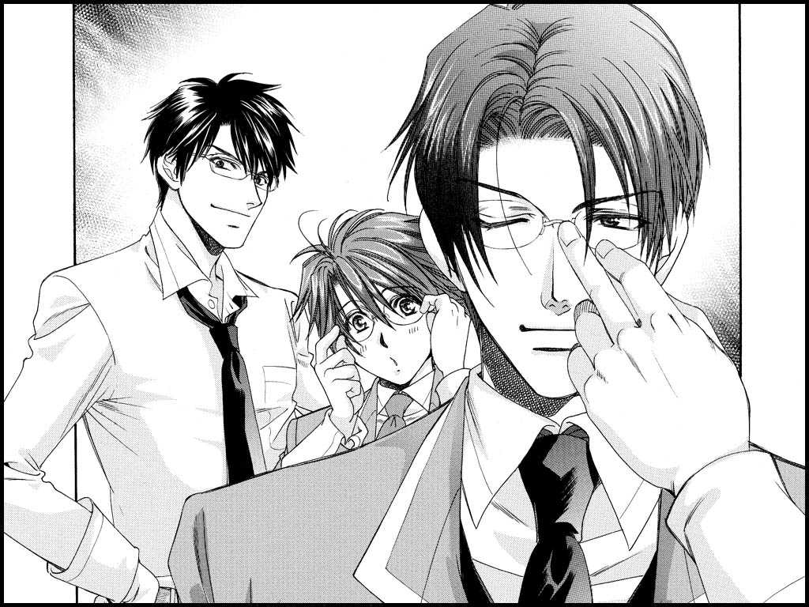
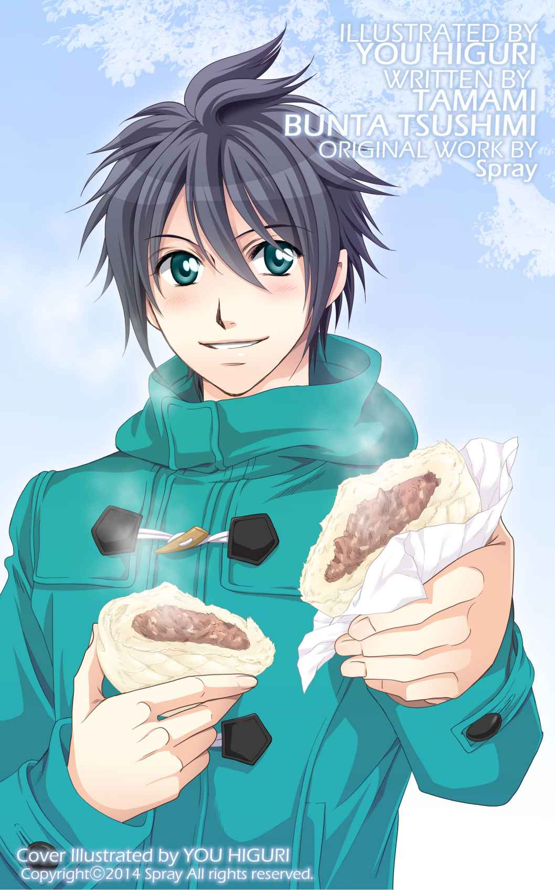

| HOT HOT WINTER HEAVEN（下）学園ヘヴン編: 学園ヘヴン＆学園ヘヴン２ SS集 学園ヘヴン＆学園ヘヴン２ SS集 HOT HOT WINTER HEAVEN (Spray) | |
| ＴＡＭＡＭＩ | |
| Spray (2015) | |
コートとマフラーなしでは外出できないくらい寒くなった頃、俺は学園の近くにある神社の鳥居の横で、王様を待っていた。
手袋越しに白い息を吐いて指先を温めながら、通りの向こうの道を何度も何度も眺める。
そろそろ来るかな。王様が来たら、なにをしよう。まずは射的かな。王様がやったら店のもの全部当てちゃいそうだ。金魚すくいもすごく上手そうだよな。
それとも先に何か食べようかな。たこ焼き、焼きそば。アメリカンドッグもいいし、焼きトウモロコシも。寒いから、じゃがバターとかも美味しそうだ。
あ、その前にちゃんと神社にお参りもしないと。おみくじも引かなくっちゃ。神楽もあるって言ってたからそれも見なくっちゃ。
そんなことを考えている俺の前を、たくさんの人が行きかう。これから行く人。帰る人。みんな楽しそうだ。
王様、まだかな。携帯メールの返信はまだ来てない。さっき電話をかけたら圏外だったから、まだ移動中かな。なにかあったら連絡するって言ってたから、携帯を忘れることはないだろうけど......。
「寒っ......」
それにしても、今日は寒いな。まだ太陽は出てるけど、午後から吹き始めた風が冷たくて、足元から冷えてくる。じっとしてるせいかもしれないと、その場で小さく足踏みする。
本当はこのお祭りには、もっと早い時間に学園から王様と一緒に来るはずだった。だけど、今朝になっていきなり予定外のことが起こったんだ。
「野球部の試合の助っ人？」
「悪いっ！ 啓太っ！ 昨日の夜にどうしてもって、野球部に助っ人を頼まれちまったんだ」
俺よりも遥かに大きな王様が、目の前で両手を合わせて頭を下げている。
「でも......」
「なんかよ、急にインフルエンザで五人も倒れちまって、選手が足りなくなったらしいんだ。なんとか人をかき集めても、あと一人足りないらしくてよ。明日の試合を棄権したら、次の大会も出られなくなっちまうみたいでさ。どうしても、試合に穴を開けるわけにはいかねぇんだっ！ 頼む、このとおりだ」
拝むようにして頭を下げられて、俺はそれ以上、なにも言えなくなってしまった。
野球部の事情もわかるし、こういう時に頼まれたら、王様が断れないのも知ってる。困ってる人を助けずにはいられないところが、王様が王様って呼ばれている所以だし、そんな優しくて男気が溢れるところが、俺は大好きだ。
仕方がないなと思いながらも、俺はＯＫした。俺の返事を聞くと、王様は心底ホッとしたような顔をした。
「すまねぇな、啓太！ さっさと試合を終わらせて、絶対に祭りが終わるまでには帰ってくるからな！」
「祭りが終わるまでには、か......」
時計を見ながらつぶやいて、小さくため息をつく。野球部の試合は、昼過ぎから始まっている。だからどんなに長引いても、もう試合は終わってるはずなのに......。
このお祭りに一緒に行こうって決めたのは、一ヶ月も前のことだ。でも、王様は、俺だけの王様じゃない。ＢＬ学園みんなの王様なんだ。
みんなにとって、王様は特別な存在で、学園の頼れる兄貴分で、リーダーでカリスマで。俺だけがひとりじめなんて、できるはずがない。
でも、だけど......って考えてしまう。王様と俺は恋人同士なのに、俺との約束より昨日の約束を優先するなんて。王様にとっての俺って本当に特別なのかな、とか......。
王様の告白や、俺への気持ちを疑ってるわけじゃない。ただ、こんな寒い中、一人で待ってるからちょっとマイナスなことを考えちゃうだけだ。
辺りはすっかり暗くなって、発電機につながった白熱灯の明かりが煌々と光を発している。風も強くなって、さらに冷え込みがきつくなってきた。
何通目かわからないメールを送って、何度目かわからない携帯の番号をコールした。画面を見ても、メールの返信も、着信もないままだ。
まさか王様、忘れてるなんてことはないよな。それとも予想以上に試合が長引いてるのかな。あと、三十分もしたら、神楽が終わる。それが終わったら、お祭りもすぐに終わってしまう......。
「うぉぉ、間に合ったぁっ!! 」
足音と共に聞こえてきた聞き慣れた声に、俺はうなだれていた頭を上げた。
そこにいたのは同じクラスで野球部の藤田だ。周りには他の野球部の人たちもいる。俺は、藤田に駆け寄って肩を掴んだ。
「藤田？ 試合は終わったのか？」
「おお！ 王様のおかげで、快勝だったぜ。ホント、王様ってすっげーな！ 部員の誰より大活躍だったぞ！」
すごい試合だったらしく、藤田だけじゃなく、他の部員も興奮気味に話している。
試合に勝ったなら、王様は？ 藤田たち野球部のグループの中に、王様の姿はない。
「なあ藤田、試合の後、王様はどうしたんだ？」
「王様？ 試合の後、待ち合わせがあるからって、俺たちより先に帰ったぞ」
「そうそう。部の送迎バスが待ちきれないからって、自分のバイクで飛ばしてったな」
「確かに、送迎バスが来るまで一時間近く待たされたから、バイクで帰って正解だったと思うぜ。事故にでも遭わない限り、俺たちより先に帰れたと思うぜ」
えっ？ そんな......。それなら、もう王様はここに来てないとおかしいじゃないか。呆然としたままの俺に、藤田たちはじゃあな、と告げて人ごみの中へと消えていった。
先に帰ったのに、王様がまだここに来ていない。みんなが言うとおり、バスよりも王様のバイクの方がずっと速いはずなのに。頭をよぎる悪い予感に、心臓が早鐘を打ち始める。
まさか、事故......!? そんな！ 王様に限ってそんなこと、あるわけないよっ！
でも、まだここに来てないってことは......。いやな考えばかりが浮かぶ中、時間はみるみる過ぎていく。社の方から聞こえていた神楽の音が止み、屋台も店じまいの準備を始めていた。お祭りを楽しんだ人たちは、色とりどりのお土産を手に家路に向かっていく。
お祭りを楽しんだ人たちと顔を合わせたくなくて、鳥居の陰に隠れながら、過ぎていく人たちを見送った。
藤田たちから聞いた、王様が待ち合わせしてる相手って、俺のことだよな？ 先に帰ったはずなのに、来ないってことは、道に迷ったのかな？ 試合があった球場は、国道沿いにあるわかりやすい場所だ。この神社の場所だって、学園から近い上に何度も来たことがあるから、迷うようなことはないはずだ。
考えをどんなに巡らせても、脳裏に浮かぶのは、一番考えたくない可能性だ。王様が事故に遭うなんて、そんなことあるはずがないと、何度も頭の中で叫ぶ。
「啓太ー！」
その時、遠くから一番聞きたかった声が聞こえた。その声にハッと顔を上げ、周囲を見渡す。
学園とは逆方向の通りから、野球部のユニフォームの上にライダースジャケットを羽織った姿の王様が、猛ダッシュで俺に向かって走ってくる。
鳥居の横にいた俺の前で止まると、肩で激しく息を吐きながら、汗だくのまま頭を下げる。
「悪ぃっ！ 遅くなった！」
声を耳にした時から、潤みかけていた俺の視界が、王様の姿を目の前にして、さらに滲みだす。
王様だ。王様が来てくれた。王様が、俺の目の前にいる！
王様を目の前にした嬉しさで、涙がぽろぽろと溢れてきて、止まらない。
「すまん。夜店、終わっちまったな......。って、おいっ。啓太っ、なんで泣いてんだ？」
顔を上げた王様が、困惑した顔で俺を見つめている。王様が困ってるから、ちゃんと説明しなくちゃって思ってるのに。さらに涙がこみ上げてきて、しゃくり上げるように泣いてしまって、言葉が出てこない。
「いや、そうだよな。ずっと前から約束して、楽しみにしてたのに、俺が助っ人を安請け合いしちまった上に、間に合わなくて祭りが終わっちまったんだもんな。悪かった！ 本当に悪かったっ!! このとおり謝るから、泣き止んでくれ」
「お、王様......っ......、なにが......あったん......ですか？」
涙が止まらない中、途切れ途切れの声を絞り出して尋ねる。
「ああ......、それがな。試合が終わった後、早く帰れるようにって、バイクで球場まで行ったのは良かったんだけどよ。帰りの山道の途中で、ガス欠になっちまったんだ。しょーがねーから、バイクを置いてそこから走って来たんだ。啓太を待たせてるからって、焦っちまって後先考えてなかったんだが、まさかここまで三十キロ以上あるとは思わなくてよ......。しかも、途中で荷物持ったばあさんはいるし、迷子になった子供がいるわで、こんな時間になっちまった」
説明しながら王様は、何度も何度も俺に向かって頭を下げた。俺はその話を聞きながら、事故に遭ったわけじゃなくて、王様が王様らしい理由で遅れたとわかって、ほっとした。
よかった。事故じゃなかったんだ。王様が無事で本当によかった。
安心したことで、俺の涙腺はさらに緩んでしまい、うつむいたまま泣きじゃくる。王様は、そんな俺の肩を掴んで、大きな身体をめいっぱい小さくして、俺の顔をのぞき込む。
「本っ当にすまなかった。結果的に、お前をすげー待たせちまった上に、間に合わなかった。約束も守れない、大事な恋人を泣かせちまう、本当に俺は最低だ。全部俺が悪い。許してくれとは言わねえから、せめて泣き止んでくれ。頼むっ！このとおりだっ!! 」
俺の肩を掴んでいた手を離すと、王様は泥だらけのユニフォームのまま、地面に膝をつけた。俺は慌てて、今にも土下座しようとしている王様の体を止めた。
「やめてくださいっ！ 王様っ！ 違うんですっ!! 」
涙でグシャグシャになった顔のまま、王様の肩を掴む。
「俺が泣いてたのは、王様が間に合わなかったからじゃないんです。待ってる間、ずっと心配で......、王様が事故とかに遭ってたらどうしよう......とか考えちゃってて......。だから、王様が無事で、本当によかったって......。そう思ったら、涙が止まらなくて......。だから......謝る必要なんて......」
「啓太。お前......」
泣きじゃくりながら説明する俺を、王様は唖然とした顔で見つめる。
「それより......俺の方こそ最低なんです。王様は、ＢＬ学園の生徒会長で、みんなの王様で......。今日だって、困った野球部を助けるために助っ人しに行ったのに......。そのくらい、俺だってちゃんとわかって......るのに......」
また、涙が溢れてくる。息が詰まりそうになるけれど、それでも言わなくちゃ。これ以上、この優しい人を困らせたくない。
「でも俺、王様は、俺との約束より、学園のみんなとの約束の方を優先するんだって、嫉妬......してたんです......。こんな我が儘な俺の方こそ......、最低なんですっ！ だから、謝らないでください......」
「啓太......」
うつむいた俺の前で、王様が驚いた声を出す。こんな独占欲丸出しな俺に、呆れてしまったんだろうか。
王様は跪いていた体勢から立ち上がると、俺の肩を優しく抱きしめる。
「すまねぇ。お前にそんなことを思わせちまったのは、俺の責任だ......」
俺は顔を上げた。優しい声とその言葉に、俺は呆然としてしまう。
「俺は、啓太は強い奴で、信頼してるから、勝手に大丈夫だって思っちまってた。完全に俺の思い上がりだ。俺の方こそ、お前に甘えてた」
「そんなこと......」
それは違う。王様が信頼してくれたほど、強くなかった俺が悪いんだ。
「でもな、啓太。俺は決して、お前をないがしろにするつもりだったわけじゃない。俺にとって啓太は、一番大切な恋人で、一番特別な奴なんだからよ」
「王様......」
涙でぐしゃぐしゃになった顔を上げると、王様は俺の目元にキスをしてくれた。優しくて、とても温かいキス。それだけで、心の底から安心できる。
まだ涙に濡れている俺の顔を見て、王様は少し困ったように微笑んだ。
「今日はごめんな。今日の祭りは間に合わなかったが、明日、俺の地元でも祭りがあるんだ。だからそっちに行こうぜ。今度は、絶対に他の予定は入れねえから」
「はい。王様」
頷く代わりに、俺からも王様の背中に手を回して、身体を強く抱きしめた。
「西園寺さんっ！ デートしましょう！」
「......どうした、啓太。いきなりだな」
飲みかけていたティーカップをテーブルに戻すと、西園寺さんは少し首を傾げた。
「駄目......でしょうか」
「まさか。お前からの誘いを断るはずはないだろう？」
機嫌よく微笑む西園寺さんに、俺の心は躍る。
やったっ！ 計画通りっ!!
西園寺さんとデート。それはもちろん、純粋に嬉しい。心の底から行きたいって思ってる。そこになんの嘘もない。
だけど今日西園寺さんをデートに誘ったのには、別の理由があったんだ。
西園寺さんにはナイショでと七条さんに相談されたのは、一昨日のことだ。
「郁の運動不足を、伊藤くんはどう思いますか？」
正直言って、俺はあまり気にしていなかった。
西園寺さんが身体を動かすのが好きじゃないのは事実だけど、それで困ることはない。そりゃ、ＭＶＰ戦のときは大変だったけど、西園寺さんには体力不足を補っても余りある、知識と知性がある。
それにものすごく綺麗で、厳しいけれど優しいところもあって、誇り高くて気品があって......。
とにかく西園寺さんは素晴らしい人だから、運動するのが好きじゃないことくらい、まったく気にならない。
そう答えた俺に、七条さんはそっとため息をついた。
「確かに伊藤くんの言う通り、郁の素晴らしさは、数え上げればきりがありません。僕もできれば、郁の望まないことはさせたくないのですが......」
そう言いながらも七条さんは、俺に一枚の紙を差し出した。パソコンのデータをプリントアウトしたらしいそれには、日付らしき数字の横に、同じような数字が並んでいる。
「８２６。７０８。......これ、なんですか？」
「郁が一日に歩いた歩数です」
どの日を見ても書かれた数字は８００前後。それってちょっと少なすぎないか？
中には２００歩ちょっとしか歩いてない日もある。
「この日は......？」
「先週の、雨が降っていた日ですね。ほら、君と一緒に図書館から山ほど本を借りてこさせられた日があったでしょう？」
あった！ あの日は朝から冷たい雨が降っていたから、西園寺さんは勝手に学校を休んだんだっけ。でも、読む本がなくなって退屈したって昼休みに俺の携帯に電話がかかってきて、それで西園寺さんのリクエストした本を二十冊くらい、俺と七条さんが借りてきてあげたんだ。西園寺さんが借りてきて欲しいって頼んだ本はどれも図書館の奥深くにあって、探すのにとっても苦労して......。
「って、俺たちがあんなに苦労したのに、西園寺さんはこれっぽっちしか歩いてないんですか!? 」
「ほぼトイレと食事以外は動いていない、と言っていいでしょう」
ひどい......。
「郁があまりに運動しないので、気になって調べてみたんです。そうしたら、この結果で......」
これはちょっと......いくらなんでも少なすぎる。前に体育の授業で、健康のためには、一日８０００歩は歩くべきだって言っていた。
でも、西園寺さんはその十分の一。いや、それ以下だ。
いくら運動するのが好きじゃないといっても、これはあんまりだ。
「ここまでとは俺も思いませんでした。さすがに......もうちょっと運動した方がよさそうですね......」
「そうでしょう？」
気にしてなかったとはいえ、西園寺さんの体力のなさは普通じゃない。だからといって、俺や七条さんが言ったところで、聞く人でもない。大体、体育の授業だって隙を見てはさぼってるくらいだ。
深いため息をつく俺の横で、七条さんが気を取り直したように微笑んだ。
「それで伊藤くんに相談したんです。どうでしょう？ 郁とデートしませんか？」
「デート？」
「はい。伊藤くんが誘えば、郁も外に出かけると思うんです。たとえば、美術館はどうですか？ 館内をくまなく歩けば、それだけでもかなり歩数は稼げます」
「なるほど......！ それ、いいですね！」
こうして俺は、西園寺さんにデートを申し込んだんだ。ＯＫしてもらえた以上、あとは俺次第。西園寺さんの運動不足解消のためにも、デート、頑張るぞっ!!
そして約束の日曜日がやってきた。
空気はちょっと冷たいけど、風もなくきれいな青空が広がっている。デートにぴったりの日だ。
それになにより......。
隣を歩くひとをチラっと横目で眺める。
真っ白なウールのコートに身を包んだ西園寺さんは、ものすごーく綺麗だった。王様じゃないけれど、女性と見間違えてもおかしくない。
でも、きりっとした立ち居振る舞いや微かに唇に浮かぶ自信に満ちた笑みは、とても男らしい。その結果、西園寺さんは男性か女性かは曖昧だけど、とにかく綺麗なひと、という印象だけが際立っていた。
並んで街を歩いていると、行きかう人が男女を問わず、西園寺さんを振り返る。だけど、その視線を気にした様子もなく、西園寺さんは俺だけを見てくれる。
「今日は啓太の誘いだからな。どこに連れていってくれるのか、楽しみだ」
「はいっ！ 西園寺さんっ！」
眩しいような微笑みに、俺の胸は高鳴った。こうして歩いているだけなのに、今日の西園寺さんがものすごくご機嫌なのが伝わってくる。俺とのデートが嬉しいのかな、なんて思ったら、それだけで嬉しいような誇らしいような気持ちになる。
用意していたチケットを西園寺さんに差し出した。
「今日は美術館に行こうと思うんです。ほらっ。チケットも用意済みなんですよ」
「美術館か。いいな」
目を細めた西園寺さんは、牧谿か、と展示内容が書かれたチケットを興味深そうに読んでいる。
用意したチケットは、『水墨画 その精神の源泉展』っていう美術館の特別展示だった。いろいろ調べたけれど、これが一番面白くなさそうだったんだ。
西園寺さんは好き嫌いがはっきりしている。つまらない催しなら、さっさと通り過ぎるだろう。美術館自体はかなり広いし、そこを早足に歩いたら、けっこうな運動になるはず。それが俺の立てた作戦だった。
それに......人が少ない展示だったら、ちょっとくらい、いちゃいちゃしても、きっと怒られないよな？ たとえば恋人っぽく手を繋いだり、腕を組んだりとか......。
「啓太？ どうした？」
「えっ、なにがですか？」
「こっちが聞いているんだ。その腕はなんだ？」
あっ、しまった！ つい、腕組みの練習をしてた！
「あっ、えっと、これは......その......。さ、寒いから、西園寺さんと腕が組めたら嬉しいかな～、なんて......」
「可愛らしいことを言う」
クスッと笑って西園寺さんが、俺に腕を差し出してくれた。やったっ！ 言ってよかったっ!!!
差し出された腕に腕を絡めて、あれっ？ これ、俺が女の子ポジション？ ちょっと違わないか？ .........とは思ったけれど、それでも大好きな人と腕を組んで歩くのは最高だった。
綺麗な髪が揺れる度に、何だかいい香りがふわっと漂ってきて、夢見心地になってしまう。
今日のデートは、きっと大成功になる。
そのとき俺は、そう思ってたんだ。
だけど、そううまくはいかなかった。
「......そろそろ、行きませんか」
美術館に入って五分で、西園寺さんは一枚の水墨画の前に立ち止まった。近寄って、離れて。また近寄って。いろんなところを確かめるように精細に観察したあと、画全体を見ることができるソファに腰を下ろした。
それから一時間。西園寺さんは微動だにしない。
俺には墨で山とかを描いただけの、どうってことない風景画に見える。だけど西園寺さんにとっては、そうじゃなかったみたいだ。
次に行きましょうと誘っても、絵から視線を逸らさない。先に行って構わないって言うだけで、西園寺さんはものすごい集中力で、ひたすら絵を見つめている。
この展覧会を選んだのが、間違いだったのかもしれない。俺は心のなかで密かにため息をついた。
俺は地味な展覧会だなぁ、くらいしか思わなかったし、ここに来てもやっぱりそう思うけど、この展示は西園寺さんにとっては、ものすごく興味深いものだったんだろう。
こうなったら仕方ない。邪魔にならないように、少しだけ離れた場所から、俺は西園寺さんを見ていよう。
それにしても......やっぱり綺麗だよな。
墨の濃淡だけで描かれた景色と向き合う、純白の西園寺さん。凜とした表情で、背筋を伸ばして座っている様子は、まるでそこに描かれた世界と対話しているかのようで。
西園寺さんのいる空間自体が、ひとつの作品なんじゃないかって思えてくる。
俺だけじゃなく、美術展を観に来たはずの他の人まで、絵よりも西園寺さんに見とれている。
美しい。って言葉がこんなにふさわしい男の人を、俺は他に知らない。
俺は同じ絵を一時間も見てることはできないけど、西園寺さんだったら見てられる。ううん。見ていたいって、思うんだ。
でも......でもっ!!
これじゃ全然、運動にはならないよーっ!!
と、突然、西園寺さんが立ち上がった。
「堪能した。これ以上は、キャパシティオーバーだ」
そう言い放つと、脇目もふらずに歩き出す。
「へっ？ なに？ 西園寺さん......そっちは出口ですよ？ 他の絵は観ないんですか？」
「今日はこれで十分だ」
「は、はあ......」
とまどう俺を引きつれて、西園寺さんは美術館を出てしまった。他の展示には目もくれず、さっさと、最短距離で。
歩きながら、ポケットに入れていた万歩計を出して見たけど......やっぱり、まだ３０００歩しか歩いてないよ！ これで学園に帰っちゃったら、たぶん、同じかそれ以下くらいしか歩かない。
健康のためには、一日８０００歩、だろ？
あと５０００歩もこの西園寺さんを、どうやって歩かせればいいんだろう。
「なんだ？ それは」
いきなりかけられた声に驚いた。西園寺さんが、俺の手元を覗き込んでる。いけないっ！ 万歩計っ。
「ふーん......臣の入れ知恵か？」
「そ、そんなっ、七条さんは......」
「啓太。お前、私と臣のどちらにつくつもりだ」
わーん！ どっちも敵に回したくないよ～！
......結局俺は、白状した。七条さんに相談されて、西園寺さんの運動不足が不安になったこと。今日のデートは、西園寺さんを運動させたくて誘ったものだということ。
七条さんには後でバレちゃいましたって言えばいいよな。西園寺さんに問い詰められたんですって言ったら、西園寺さんに甘々の七条さんは、仕方ないって言ってくれるはずだと思う。
それよりも、俺は目の前で不穏な笑いを浮かべた、俺の綺麗な恋人のほうが怖い。
全てを白状した俺に、西園寺さんは呆れ顔になる。
「運動不足が心配？ なにを言う。啓太とつきあうようになってから、私の運動量はずいぶん増えたぞ」
「そうなんですか？」
これで運動量が増えたなんて、さすが西園寺さん......まったく運動する気がない。だって、俺が西園寺さんと一緒にやったスポーツなんて、夏休みに誘われていった乗馬くらいだ。それに......。
「西園寺さんがスポーツしてるところなんて、俺は見たことがないんですけど」
首を傾げる俺に、西園寺さんはニヤリと笑った。そのまま、ゆっくりと顔を近づけてくる。
「運動ならば、ベッドの上でしているじゃないか」
「な......っ」
あ......っ。やばいっ、俺......っ。
吐息がかかる距離で、赤い唇が薄く笑う。
毒を含んだ甘い声で囁かれた俺は、思わず前屈みになってしまった。そんな顔でこんなセリフを言うなんて、西園寺さんはえっちだ......。
真っ赤になる俺に喉を鳴らして笑う姿は、猫科の動物そのもので、俺はもう......。
「なんだったら、これから運動していくか？」
わっ。わわっ！ 西園寺さんっ！ なんてことをっ!!
顔が耳まで熱くなる。ドクドクと鳴る心臓が、喉の奥までせり上がってきそうだ。
頭のなかをグルグルと、いままで西園寺さんとしてきた、たくさんの『運動』が蘇ってきて、息が荒くなる。
うん。そうだよな。アレって結構、ヘビーな運動だもんな。
......俺ばっかり動いて、西園寺さんはあんまり動いてないような気もするけど、もう、それはこの際、どうでもいいことにしておこう。
「どうする？」
耳に流し込まれる囁きに、俺はコックリと頷いた。ここで退いたら男じゃない。
七条さんには報告できないけれど、ちゃーんと俺が西園寺さんを運動させてみせますから！
「行きましょう！ 俺、西園寺さんをいっぱい運動させてみせますから！」
「まったく。啓太といると幽玄な気分が台無しだ」
腕を組んで強引に歩き出す俺に、西園寺さんが呆れたように、でも嬉しそうな顔で笑った。
冬休みが近づいたせいか、寮の食堂はいつも以上に、にぎやかだった。冬休みの予定や、実家へのお土産の話などで盛り上がっている。
だけど俺は、ちょっとさびしい。和希がいないからだ。和希は放課後に出かけたきり、まだ帰ってきていない。いつも忙しいみたいだけど、和希はできるだけそれを俺に見せないようにしている。でも、ここ最近は年末が近いせいか、そうもいかないみたいだ。
「おっ。啓太、暇か？ みんなでゲームやろうぜ」
食事を終えて、部屋に戻ろうかと思ったところで、王様に声をかけられた。背後には、俊介や成瀬さんたちもいる。
「遠藤がいないなら、ハニーも一緒にやろうよ」
「そやそや。みんなで食券一枚ずつ出して、勝った奴が総取りってルールや」
そんなわけで、寮の食堂で暇な人が集まっての、ゲーム大会が始まった。ゲーム大会っていっても、ＭＶＰ戦みたいなすごいゲームじゃなくて、ただの双六タイプのボードゲームなんだけど。
でも、始めてみたらゲームは盛り上がりに盛り上がって、いよいよ消灯時間間際の最終ゲーム。ゴールまでの俺のマス目はあと六つ。息を呑んで、転がしたサイコロの目が六を指した時、食堂に和希が入ってきた。わあっと盛り上がる状況に困惑したままの和希の手を取って、俺は勝利を喜んだ。
優勝賞品の食券をもらって、部屋に戻る途中で、和希が小さな声で言う。
「啓太。いなくてゴメンな」
「気にするなよ。和希が忙しいのはわかってるから」
「でも、あまり一緒にいてあげられないだろ」
「大丈夫だって。今日だって、みんなとゲームして楽しかったからさ」
「そういえば、ずいぶん盛り上がってたな」
「うんっ。食券がかかってたから、みんな真剣でさ。俊介は最初は調子良かったんだけど、その後みんなに狙い撃ちされてさ。王様も勝負だと容赦ないから、なにがなんでも勝ってやるって夢中でさ。あ、それから成瀬さんも......」
「そっか......。楽しくてよかったな」
興奮気味に話す俺の話に、和希は苦笑気味に微笑んだ。その和希に少し引っかかるものを感じたけど、それを尋ねる前に、部屋の前に着いてしまった。
「じゃ、おやすみ。和希」
「ああ......。なあ、啓太」
何となく歯切れの悪い返事をしかけて、和希が俺を呼び止めた。
「明日の休み、デートしないか？」
「明日？ うん、特に用事はないから大丈夫だけど......」
いきなりのデートの誘いに面食らった。いつもは、和希がデート時間を作るために、ある程度前から約束することが多かったからだ。だからといって、和希の誘いを俺が断るわけがない。俺は、明日を心待ちにしながら、部屋のドアを閉じた。
翌日。俺は学園島から少し離れた場所にあるオープンカフェで和希を待った。
和希の奴、なんでこんなところを待ち合わせ場所に指定したんだろう。同じ寮にいるんだから、一緒に出かければいいのに。しかも、この季節のオープンカフェって寒いんだけどな。当然のように、他のお客さんは俺のいるテラス席ではなく、みんな店の内側にいる。
手を温めていたカフェオレのマグカップを空にしたところで、目の前に一台の車が止まった。
「お待たせ。啓太」
「......和希？」
その車に乗っていたのは、和希だった。いつも乗っている後部座席ではなく、運転席にひとりで。車から降りた和希は、助手席のドアを開けると、俺に乗って、と促した。
そのことだけでも十分驚きだったんだけど、今日の和希はいつもの和希と、まるで雰囲気が違った。
ニットにジャケットとパンツを合わせたシンプルな服だけど、いつも和希が来ている服とは違って見えた。たぶん、生地とか仕立てがいい服なんだと思う。学生のフリをしてる和希じゃなくて、これが本来の和希の姿なのかなと思いながら、助手席に乗り込む。
落ち着いた濃紺の流線型の車の中は想像以上に広くて、座ったシートは心地良かった。ハンドルに付いた動物の顔のエンブレムは俺でも知ってる高級車だ。慣れた動きでシフトレバーを操作すると、滑るように車は走り出した。
「今日は天気もいいし、どこか眺めのいいところに行こうか」
運転席で微笑みかける和希を見て、和希が年上だということを思い出した。
それから和希に案内されるままに、学園島とはまるで違う車窓からの景色を楽しんだ。
日が傾いてきた頃、車は都心へと向かった。ハイブランド店が並ぶ通りで車を駐めると、和希は目の前の黒を基調にした一番高級そうな店に入っていった。俺も慌てて後に続く。
「お待ちしておりました。鈴菱様」
俺たちが来ることがわかっていたのか、何人もの店員さんが和希に、恭しく礼をする。店員さんが頭を下げる度、俺もぺこぺこと頭を下げてしまった。
「啓太、ここにある服、どれでも好きなのを選んでいいよ」
「え、和希？ どれでもって......」
好きなのって。ここにある服、いくらするんだよっ。どう考えても、俺が普段着ているのよりゼロが二つくらい違うように見える。しかも、店内をぱっと見ても、どこにも値札が見当たらない。
俺が選びかねていると思ったのか、和希は店長らしい人に、俺の方を指してこう言った。
「彼に似合うのを選んでもらえるかい？」
そこからは、店員総出で、俺の着せ替え会が始まった。試着しては、和希の前にお披露目してを繰り返した。
どの服も俺が着たことがないようなちゃんとした服ばっかりだったから、正直似合ってるのかどうかもよくわからなかったけど、着替える度に和希が似合ってると褒めてくれるのは嬉しかった。俺が何着か試着して、丈を調整している間に、和希も別の服に着替えていた。理事長の時に着ているスーツよりも、ダークで細身のスーツを少し着崩す感じで、ラフに着こなしていた。
着替え終わった俺の姿を見ると、和希はくつろいでいた一人掛けのソファから立ち上がり、やっぱりいいねと微笑んだ。その言葉に赤面したのは、褒められたからじゃなくて、大人っぽい和希に見とれたからってのは、なんか悔しいから黙っておいた。
和希はサインだけで支払いを終えると、着替えた格好のまま、次の場所に向かった。着いた場所は、世界的にも有名な超高級ホテルの最上階のレストラン。
落ち着いたピアノの曲が流れる店内を、ふかふかの絨毯を踏みながら、案内される。緊張する俺の前で、和希は颯爽と歩いている。
学園で見慣れているはずの和希が、ここではまるで別人みたいだ。クラスメイトの遠藤和希じゃなくて、大人の鈴菱和希。どっちも和希だけど、たぶんこっちが本当の和希に近い姿なんだと思う。
ハイソな雰囲気が漂う店内にいるお客さんは男女ともにドレスアップしていて、最初に着ていた私服のままじゃなくてよかったと心底思った。
窓際の一番景色のいい席に座り、渡されたメニューは、フランス語と日本語で書かれていたけど、専門用語が多すぎてどんな食べ物かすらわからない。
和希に任せるよ、と俺が言うと、和希は慣れた感じでギャルソンに細かな指示をしながら、注文をしてくれた。
「さすが和希だな。俺にはさっぱりわからなかったよ」
「何度かここを使ったことがあるだけだよ。それよりも俺は、前に一緒に行ったもんじゃ焼き屋で、暗号みたいなメニューを注文して、自分でもんじゃを焼く啓太の方がすごいと思ったぞ」
そういえば、少し前にもんじゃ焼きを食べたことがないっていう和希を連れて、月島に行った事があった。確かにあの時のぽかんとした和希の顔は、今の俺がしていた顔と同じだったかもしれない。
あの時は楽しかったな......と思い出しながら、じゃあ今日のデートはどうなんだろうって、疑問が浮かぶ。和希が誘ってくれたことは嬉しかったし、ドライブしたり、服を買ってくれたり、高級なディナーに連れて行ってくれたことに不満なんてない。
和希は鈴菱グループの偉い人だから、こんなことくらいどうってことないのかもしれないけど、俺には分不相応って気がするんだよな。それに一から十まで和希にエスコートしてもらってると、なんだかデートしてるっていうより、接待されてるような気さえしてくる。
最近忙しくて、あまり会えなかったから、和希はその埋め合わせのつもりなのかもしれないけど、俺は和希に申し訳ないと思う気持ちの方が先に立ってしまっていた。
なんとなく引っかかったものを感じながら、和希の顔を見る。視線が合うと、すぐに和希は笑顔を見せたけど、その一瞬前、和希がどこか不安な顔をしていたように見えた。
その店でのディナーは、文句をつけるところが見つからないくらいとても美味しかった。店を出て、再び和希の運転する車に乗った。
「まだ時間はあるし、もう一ヶ所くらい廻れるな」
走り出した車の中。左隣の運転席の和希は、前を向きながら話しかけてくる。
「生演奏を聞かせてくれるいい店があるから、今の時間からなら......」
「あの......和希。もう、いいよ」
「えっ？」
おそるおそる提案した俺の言葉に、和希の表情が固まる。
「もう、そんなに高級なとこじゃなくていいから、もっと普通っぽいところに行かないか？」
「もしかして、啓太は楽しくなかったのか？」
和希はハンドルを切って、脇道の河川敷で、車を停めた。シートベルトを外して、不安そうな顔で隣にいる俺を見つめる。
「ううん、今日のデートもすっごく楽しかったよ。和希が車を運転してくれたり、俺が絶対行かないような店で服選んでくれたり、食事だってすっごく美味しかった」
「それじゃあ、なんで？」
「別にあんな高級な店じゃなくてもいいんだ。和希と一緒に過ごせるなら、どんなところだって楽しいんだからさ。でも、今日は和希と過ごしていても、いつもみたいに楽しめてないがしたんだ」
「俺に気を遣って合わせてくれてたからか？」
「ううん、そうじゃない。俺は楽しかったって言っただろ。でも、この間一緒にもんじゃを食べに行った時の方が、もっと楽しかったんじゃないかなって思ったんだ。俺じゃなくて、和希が」
「啓太......」
暗がりの中、和希が俺を見つめている。
「......やっぱり、お前には隠せないな」
和希は大きなため息をつくと、俺に頭を下げた。
「ごめん。啓太。今日のデートは、完全に俺の独りよがりだった」
いきなりの謝罪に、俺は動揺してしまう。どういうこと？と尋ねる俺に、和希は言葉を続ける。
「いつも啓太の前にいる時は、できるだけ鈴菱和希じゃなくて、遠藤和希でありたいと思ってきた。理事長じゃなくて、啓太と同じ立場のクラスメイトとして、同じ目線で毎日を過ごしたいと思ってきた。啓太にも気兼ねして欲しくなかったしな」
和希がそう思っていたことは、俺も知ってたから、俺は黙って頷く。それを見て、和希は視線を外しながら照れくさそうに頬をかく。言いづらいことを言うときの和希の癖だ。
「だけど、昨日......、みんなと楽しそうにしてただろ？」
「昨日って......ゲーム大会のこと？」
意外な答えに、きょとんとした。
「ああ。あの時楽しそうにしている啓太を見て、たとえ啓太の目線に近いところにいても、俺には啓太にあんな表情させられないんじゃないかって思ったんだ。だったら、たまには啓太に大人のアドバンテージを見せてもいいかなって」
「それで、学生っぽくないデートをしたのか？」
「......ああ。でも、それが間違いだってわかったよ。俺は、単に手の届かないことに嫉妬してただけで、俺は啓太を楽しませるよりも、自分のエゴを優先してたみたいだ。だから、ごめん」
「謝らなくていいって」
和希の気持ちを聞いて、俺は嬉しくなった。
「だって、それって嫉妬するほど俺のことを和希が想ってくれてたってことだろ。和希が俺を喜ばせようと考えてくれたことなら、俺はなんだって喜ぶよ」
「啓太......」
「和希って、普段あんまり自分の欲みたいなのを見せてくれないだろ。そういうところが和希って大人だなって思うんだけど、それを見せてくれたのがなんか嬉しいんだ。それに俺は、クラスメイトの和希も、理事長で大人な和希も、どっちも大好きだからさ」
「ありがとな、啓太」
座席のシートに押しつけられるみたいにして、和希に抱きしめられた。俺からも手を伸ばして、和希の背中を抱き締める。
「大好きだよ」
和希が耳元で囁くようにつぶやいて、そのままキスをした。
すごく気持ちいい。それに嬉しい。俺はやっぱり和希が好きだって強く思いながら......。いつもより少し大人のキスに感じたのは、たぶん気のせいじゃない。
そのまま長い間抱き合って、ようやく和希は顔を上げた。自然な笑みを浮かべた顔は、昼間よりも身近な和希に戻った気がして、俺も同じように笑い返す。
「じゃあさ、次は学生らしい等身大のデートとして、ゲーセンにでも行く？」
俺の提案に、和希は顎に手を当てて、少し悩んだ仕草をする。
「ゲーセンもいいけど......、せっかく車で二人きりなんだからさ、学生同士に戻る前に、大人のデートの醍醐味もしてみたいな」
和希の意図を理解した時には、和希に抱きしめられたままもたれかかった車のシートが、ゆっくりと倒れ始めていた。俺は返事の代わりに、和希のネクタイに指をかけて、自分からキスをした。
中嶋さんはいつも俺に素っ気ない。世間的には冷たいっていうのかも。ふたりっきりにならないと、恋人らしいことすらしてくれない。
ベタベタしたり、甘えたり、そういう恋人っぽいことを中嶋さんが嫌いなのは、最初からわかってた。俺だって、別に学園のみんなの前で、中嶋さんといちゃつきたいなんて思ってるわけじゃない。だけどあまりに素っ気ないと、本当に中嶋さんの恋人なのか不安になってくる。
そうでなくても、二学期の終わりが近づいてきたせいかここのところ生徒会の仕事がずっと忙しい。俺が手伝いに行っても、生徒会室にはたくさんの人が出入りしている。俺はあちこちの部活に書類を届けたりして、学園中を走り回ってばかりだ。当然、中嶋さんとふたりきりになる機会なんてほとんどない。もっとかまって欲しいけど、とてもそんなことを言い出せそうな雰囲気じゃない。
忙しい中で、そんな余計なことを考えていたからか、俺は失敗をしてしまった。
「交流試合の迎えのバスが来てない？」
駆け込んできたフェンシング部の人の言葉に、王様は大きな声を上げた。
「さっき陸上部が、明日来るはずの迎えのバスが、間違って今日来たと言っていたぞ」
処理していた書類から、顔も上げずに中嶋さんが言った。その言葉で、俺は息が止まりそうになった。
俺だ。先週、試合の送迎バスの申請書を運動部から受け取ったことを思い出した。バスの手配先を伝えた俺が間違えたんだ。
全身からサッと血の気が引いて、身体が凍り付いた気がした。呆然としたままの俺の目の前で、中嶋さんが腕時計に目を落とす。
「報告からまだそれほど経っていない。お前が追いかければ、時間的にはまだ間に合うはずだ」
「よっしゃ。じゃあ、引き留めに行ってくるぜ！」
言い終わる前に、王様は生徒会室から飛び出していた。たまった仕事に嫌気が差して、王様がそろそろ逃げ出したくなる頃合いだったから、ちょうどいい口実だったんだと思う。
しかしそのおかげで、手配ミスした送迎バスは無事フェンシング部の選手を乗せて、交流試合先に向かって行った。
報告を聞いた俺は、ほっと胸をなで下ろした。
「抜けてるな。生徒会の仕事を手伝う以上は、集中しろ。この忙しいときに、仕事を増やすな」
「すみません......」
中嶋さんの言葉は、全てが正しくて、俺は項垂れるしかなかった。
でも......、もうちょっと柔らかい言い方をしてくれてもいいのにな。俺と中嶋さんは恋人同士だから、ミスを見逃して欲しいとか、そんなことを望んでるわけじゃない。ミスは俺の責任だし、責められて当然だと思う。だけど、あとほんの少しでいいから、優しい言葉をかけてくれてもいいのにな。
そんなことを考えていたら、ついため息が漏れてしまった。
そんな俺に、中嶋さんは事務的な口調で言う。
「不満か？ 俺は当然のことを言ったまでだ。特別扱いを望んでまともに仕事ができないなら、手伝いなんかしなくていい」
「別に、そんなこと思ってませんっ！」
「ならいい」
それだけ言うと、また中嶋さんは大量の書類に視線を落として、それきり俺の方を見ようともしなかった。
わかってるよ。中嶋さんの言うとおりだってこと。それでも、つい思ってしまうんだ......。
生徒会の忙しい日々は、それからも続いた。土曜日になっても生徒会室には、山のような仕事が積み上がっていて、俺の仕事が全部終わった頃には、すっかり日が落ちていた。
隣の机に座る中嶋さんは、まだ仕事をしている。俺の何倍も仕事をこなしているのに、まだ仕事が残っているのは、今日も逃げ続けた王様のせいなんだけど。
「中嶋さん。なにか手伝いましょうか？」
「いや、いい。もうお前にやってもらうことはないから、さっさと帰れ」
相変わらず書類に目を落としたまま、俺の方を一瞥もしないで、事務的に中嶋さんが答える。
「はい......」
中嶋さんの仕事が終わるまで、隣で待っていようかと思ったのに、帰れ、と言われてしまったら、そうすることしかできない。明日は日曜だから、中嶋さんと一緒にすごせるかもと思っていた気持ちを、無理矢理胸の奥に閉じ込める。
俺は仕方なくカバンを手に取ると、生徒会室を出ようとした。そんな俺の背中に、声がかけられる。
「この仕事が片付けば、明日は生徒会の仕事はない。一緒にどこかに出かけるか？」
諦めかけていた願望が叶った俺は、すぐさま振り返った。
「はいっ！ 中嶋さんっ!! 」
――日曜日。
中嶋さんとの待ち合わせ場所は、学園島の外の駅前通り。時間は夕方過ぎだったけど、俺は待ちきれなくて、半日も早く寮を出て、近くで時間を潰してから、待ち合わせ場所に来た。それでも待ち合わせ時間よりも三十分早かった。
初めのうちは、楽しみすぎて寒さなんて気にならなかったけど、日が落ちてくるにつれて、だんだん寒くなってきた。待ち合わせは大通りに面している場所で、ビルから吹き下ろす冷たい風がかなり強めに吹いていた。手袋を持ってくれば良かったな、と思いながら、冷たい手をこする。
中嶋さんは、待ち合わせの約束の時間どおりに来た。ＢＬ学園の制服姿とはまるで違う、シックな格好だ。
でも俺の目が釘付けになったのは、中嶋さんの手元だった。中嶋さんがはめている手袋は、少し前の誕生日に俺がプレゼントしたものだったからだ。プレゼントを買うとき、俺もサイズ違いの同じ手袋を自分用に買った。中嶋さんが実際に使ってくれているのを見て、俺は息が止まりそうなくらい嬉しくなった。
「何をしている。早く行くぞ」
もう歩き出していた中嶋さんに声をかけられて、ハッとした。慌てて中嶋さんの後を追いかける。そのときの俺の顔は、たぶん中嶋さんには見せられないくらいにやけていたと思う。
待ち合わせ場所から、少し歩いたところに目的の場所はあった。創作ダイニングと書かれた少し目立たない看板の地下にあるお店だ。もちろん、その店を選んだのは中嶋さん。中嶋さんが選ぶ店は、いつもおしゃれで、大人の雰囲気の店で、料理の味は絶対にハズレがない。
その店の料理もやっぱりすごく美味しくて、美味しいですねを連発していたら、感想の語彙が貧困だって、中嶋さんに笑われてしまった。
メインの食事を終えたところで、中嶋さんに聞いてみた。
「あの、今日はどうして俺を誘ってくれたんですか？」
「このところ、ずっと忙しくてかまってやれなかったからな。お前はよく手伝ってくれた。それに、お前は派手にへこんでいただろう？」
「あ......」
中嶋さん。俺がかまって欲しいって思ってた気持ちに気づいてくれてたんだ......。
思わず目の前にいる中嶋さんを、驚いた顔でしげしげと見つめてしまった。
「どうした？」
グラスを手にした中嶋さんが、薄い笑みと共に聞いてくる。我に返った俺は、思わず身を乗り出した。
「......なんか俺、嬉しくてっ」
「嬉しい？」
「だって、俺がへこんでたのは俺の責任なのに。それを中嶋さんが気遣ってくれるとは思ってなくて......」
「確かにあのヘマはお前の責任だ」
中嶋さんが、グラスをテーブルに置いた。その顔から笑みが消え、眼鏡の向こうから見据えるような眼差しが向けられる。
「確かにミスのレベルに比べたら、少し冷たいことを言ったかもしれない。今はお前のミスくらい俺たちがフォローしてやれる。だが、俺たちが卒業してしまえば、そのフォローもできなくなる」
わかっていたことだけど、中嶋さんは来年卒業する。いつまでも生徒会をやっているわけじゃないんだ。生徒会だけじゃない、一緒に学園で過ごすこともできなくなるんだ。目を背けてきた事実に、胸がきゅっと締め付けられる。
「はい......」
耳の奥で、唾の音がごくりと鳴る。
「今のうちに、俺たちのフォローなしでもできるようになっておけ。俺たちが補佐に認めた奴が、後輩に無能だと思われたんじゃ困るからな。お前ならできると、俺たちが判断したんだ。自信を持てばいい」
緊張しながら、俺は頷いた。生徒会の一員として、俺を信用して託してくれている。その想いが俺の心にズシンと響く。中嶋さんが俺に厳しくしていたのも、俺を信用してくれていたからなんだ。託された責任に緊張すると同時に、期待されていることが誇らしくて嬉しくて、顔がほころびそうになる。
でも、春になったら中嶋さんは、ＢＬ学園からいなくなってしまうんだよな......。
店を出ると、空は真っ暗で、冷えた空気が夜空に浮かぶ月を綺麗に見せていた。
白い息を吐きながら、中嶋さんとの思い出は月夜が多いなと、初めて校舎裏で中嶋さんが助けてくれた時のことを思い出していた。
あれから、何度も中嶋さんと月夜を過ごした。中嶋さんが卒業したら、こんな風に月夜を一緒に歩くこともなくなってしまうのかな......。
身も心も凍ってしまいそうな寒さの中、凍える指に息を吐きかけていると、いきなり中嶋さんに手を掴まれた。
冷え切った俺の指に、大きくて固くて長い指が絡みついたと思ったら、そのまま俺の手ごと中嶋さんは、コートのポケットに入れた。中嶋さんの温かい手にギュッと握り締められて、触れていない全身まで温かくなった気がする。
驚いて顔を上げると、中嶋さんは何ごともなかったようないつもの表情で歩いている。
二人きりの時以外は、ほとんど恋人らしいことをしない中嶋さんが、俺と手をつないで歩いてくれている。そのことだけで嬉しくなって、俺は手を繋いだ腕に寄り添うみたいにして、手を強く握り返した。
「なんだ？ まだ寒いのか？」
中嶋さんが空いた手で、俺に片方の手袋を差し出した。手を繋いでいる方の中嶋さんの手袋だ。
「空いてる方の手にはめておけ」
「いいんですか？」
「お前は鍛え方が足りないから、すぐに風邪を引くだろう。俺にうつったら余計に面倒くさいからな」
皮肉を込めた中嶋さんの優しさに、思わず笑みが漏れる。にやけるだけじゃなくって、フフッと声を出して笑ってしまう。
「変な奴だ」
中嶋さんはあきれたふうに言うけど、その声も顔も、いつもよりずっと優しい。
「だって、中嶋さんが優しいから」
「俺は基本的には、優しい人間だと思っていたんだが？」
「そうだったんですか？」
「周囲の奴が、俺のことをどう思っているかは知らないが、いつもお前や丹羽の、面倒な尻ぬぐいをしてやっているだろう。それだけでも優しいに決まっている。それともお前は、優しくない俺の方がよかったか？ ......そうか。お前はお仕置きされるのが、好きだからな」
そう言って、中嶋さんはニヤリと笑った。
「違いますって！ 俺は、冷たい中嶋さんより、優しい中嶋さんの方がずっとずっと好きです！」
「そう言われると、冷たくしたくなる」
にやりとした笑みのまま話す中嶋さんの言葉は、冗談だってわかってるから、余計に嬉しくなる。嬉しい気持ちが抑えられなくて、寄り添っていた腕にさらにくっついた。ポケットの中で握り締めた手が、とても温かい。
「邪魔だ。歩きにくい」
文句を言いながらも中嶋さんは、俺の手を握ったままでいてくれた。
無人のバス停に着いた。学園行きのバスはもうすぐ来る。バスが来たら、繋いだままのこの手を離さなくちゃいけないと思うと、もう少しバスが来なければいいのにと思った。
通りの奥に、こちらに向かって曲がってくるバスのヘッドライトが見えた。中嶋さんの手がスッと離れて、行き場を失った俺の手に何かが乗せられる。
俺の手に乗せられていたのは、俺が中嶋さんに借りている手袋と同じデザインの手袋だ。二つ一組そろっているから、 中嶋さんのものじゃない。
「これ......俺の？」
「ああ、昨日、生徒会室に忘れてあった」
「中嶋さん......」
これを持っていたなら、さっき店を出たときに渡しても良かったはずだ。でも、中嶋さんは俺の手を握ってくれた。俺の気持ちを察してくれた中嶋さんの優しさに、たまらなく嬉しくなる。この人の、こういうところが、好きでたまらない。
やっぱり俺、どうしようもなく中嶋さんのことが大好きなんだ。
「中嶋さん、大好き」
精一杯背伸びして、俺から中嶋さんにキスをした。
ああ、と短く返事をした中嶋さんは、優しく微笑んで、今度は俺の背中を抱き上げるようにして、俺にキスを落とした。
鼻先をミントの匂いがかすめた。
顔を上げると、七条さんが自分の唇に口紅を塗っていて、少し驚いた。
「七条さん、それって......」
「ああ、リップクリームですよ」
なんだ、口紅じゃないのか。でも、男の人がこういうのを使っているのって、初めて見るかも。
少し目を伏せてリップを塗る仕草は、なんだかちょっとエッチだ。濡れ光っていく唇が、色っぽく見える。これって七条さんだからかな。
「興味がありますか？」
「えっ!? べ、別にっ！」
ヤバッ！ 俺、すごくマジマジ見てた。
慌てる俺に七条さんは、にっこりと微笑みかける。
「伊藤くんにも塗ってあげましょう」
「そんな、いいです」
「大丈夫。色はつきませんから」
いくら色がつかなくても、こんなの塗るなんて少し抵抗がある。それに、いま七条さんの唇を塗ってたリップを俺に塗ったら、間接キスになっちゃうじゃないか......。それってなんだか、キスをするより恥ずかしい気がする。
それなのに、七条さんは自分が使ったリップを手に迫ってくる。
「最近、乾燥していますからね。唇がひび割れたりしたら痛いでしょう？」
片手で肩を押さえつけられた。リップを持ったままの手で顎を持ち上げられて、ミントの香りが鼻腔をくすぐる。
「あの、七条さん......、俺、自分で塗れます......」
「僕に塗らせてください」
そんな、恋人にリップを塗ってもらうって......。恥ずかしすぎるうえに、なんだか少しいやらしい気がする。
きっと、七条さんはそんな俺の気持ちなんか、手に取るようにわかってるはず。それなのに、笑みを浮かべたままだ。
「伊藤くん。少し、口を開いてくれませんか？」
口調はお願いなのに、俺は抵抗できる気がしない。
言われた通りにすると、微かにぬめった感触が俺の唇を滑った。ゾクリとするような感覚に、思わずすがるように見つめてしまう。
七条さんの瞳が細められる。俺、変な顔をしてるのかな？ 心の底まで探るような眼差しに、自分が丸裸にされていくような気分になる。
「もう少し、そのままで」
ゆっくりと、丁寧に、俺の唇をほんのり冷たいリップスティックが往復していく。しばらくすると、それは唇の温度で溶けて、ぬるりとした触感に変わっていく。
「も......っ、いい、です......」
耐えていた息をわずかに漏らすと、声が掠れてしまう。
それに構わず、七条さんは柔らかくなったリップを、何度も左右に往復させた。ヌルヌルと滑る感触が、情動を煽っていく。我慢しきれなくなって、思わず七条さんの胸に手をついて引き離そうとした。
「これでいいでしょう」
すると七条さんは何事もなかったようにパチンとリップの蓋を閉めた。
「ふふっ。美味しそうな唇になりました」
たっぷりとクリームを塗りつけられた唇が、ぼってりと重い。きっと俺の唇は、七条さんの唇みたいに濡れ光ってるんだろう。
その目の前のつややかな赤い唇が、満足そうに弧を描いた。
七条さんが顔を近づけてくる。キスされるんだってドキリとしながら、俺は誘われるように目を閉じて......。
「......二人とも。仕事をしないのなら、ここから出て行け」
心の底から不機嫌そうな西園寺さんの声で、俺はハッと我に返った。
「すすっ、すみませんっ!! 」
そうだった。ここは放課後の会計室で、俺は仕事を手伝いに来ていたんだ。
ううっ。恥ずかしい。今の、全部見られてたよ。
「郁。そんなに怒らないでください。僕が乾燥肌で、冬はスキンケアをしないと大変なことは知っているでしょう？」
「そうなんですか？」
初めて聞いた。驚いて聞き返した俺の手を、七条さんは包み込むように両手で取る。
「はい。放っておくと、指先がすぐにひび割れてしまうので、冬はハンドクリームが欠かせないんです」
「でも、七条さんの手って、すごくすべすべしてますよね。傷一つないっていうか......」
「それはもちろん、ケアをしてますから」
そう言いながら、七条さんのしっとりとしたすべすべの指先が俺の指を撫でる。爪の先まで整った長くて綺麗な指はすごく七条さんらしくて、俺が大好きな部分だけど......そうか。これってちゃんと手入れしているからなんだ。
でも、わざわざ手入れするなんて、面倒じゃないのかな？
「ひび割れたような指で、大切な伊藤くんに触れるわけにはいきませんからね」
心を読まれたみたいな返事にドキッとする。
七条さんが聡いことなんてわかっているのに、いつまで経っても俺は驚かされてばかりだ。
「俺......、別に七条さんの指がガサガサでも気にしません」
「でも、どうせ触れあうならば、気持ちがいいほうがいいでしょう？」
そう言って、長い指で俺の手の甲を撫でていく。しっとりとした指先の感触は、確かにとっても気持ちがいい。でも、指の股から側面にかけてなぞりあげ、指先までたどられると、ただ気持ちいいだけじゃすまなくなりそうだ。
それでなくても、唇がじんじんと熱くてたまらないのに。
込み上げてくるものを抑えようと、なんとか言葉を探す。
「七条さんも、俺の手がすべすべの方がいい......ですか？」
「そうですね。......ああ、そうだ。伊藤くんにもハンドクリームを塗ってあげましょうか？」
「俺......」
「――だから、そういうことをしたいなら、さっさとここから出て行けと言ってるんだ。空気が濁る」
......そうだって。ここは会計室なんだ。
さすがにこれ以上、西園寺さんを怒らせたらいけないと思ったのか、七条さんの手が離れた。そのまま俺の脇をすり抜け、机に置いてあった書類を手に西園寺さんの方へと向かう。
「そんな顔をしないでください。伊藤くんが怯えますよ」
「私は啓太ではなく、お前に呆れているのだが。なにを考えているのか知らないが、やり過ぎだ」
「ちょっとしたスキンシップじゃないですか。はい。資料はちゃんとできています」
ジロリと睨む西園寺さんを意に介さず、七条さんはまとめた書類を手渡した。さすがは七条さん。自分の仕事は、ちゃんと終わらせていたんだ。
時折いくつかの質問を挟みながら、西園寺さんは書類に目を走らせる。それが終わるのを少し手持ちぶさたで待っていた七条さんが、ふと手を伸ばした。
「それにしても不公平ですよね。どうせ郁は、なにもケアをしていないんでしょう？」
七条さんの手が、西園寺さんの髪をすくい上げる。長い髪がさらさらと、七条さんの指の隙間から零れ落ちた。
「やめろ、臣。気持ちが悪い」
触れる手を振り払われても、七条さんは笑ってる。
こんなのは、見慣れた光景のはずだ。
それなのに、この日に限って、胸の奥がちくんと痛んだ。
次の日曜日。
俺は七条さんに内緒で、こっそり学園島の外へ買い物に出た。向かった先は、ドラッグストアのヘアケアコーナーだ。
「......どうしよう」
でも、棚にずらりと並んだボトルを前に立ち尽くしてしまう。いったい、どれを買えばいいんだろ？
七条さんは、手触りのいいものが好きだ。マフラーやセーター。毛布もパジャマも、七条さんが身に着けるものは、どれもみんな柔らかくて気持ちいい。
まるで、西園寺さんの髪みたいに。
俺も触ったことがあるけど、西園寺さんの髪って、すごくしなやかで、艶々すべすべしていて、そのままずっと触っていたくなるような手触りなんだ。俺の髪もあんなだったら、七条さん、きっと気持ちいいって言ってくれるだろうな。
だけど俺の髪の毛は、ぴんぴん跳ねてて、ちょっと硬い。
そんなの生まれつきだから仕方ないって思ってたけど、七条さんは俺に嫌な思いをさせないようにって、わざわざ手入れをしてくれていた。だったら、俺もそういうのをやってみようと思って、こうやって買いにきてみたんだけど......。
ため息をつきながら、ボトルを眺める。たくさん種類がありすぎて、どれを選べばいいのか、さっぱりだ。
「僕はそのシトラス系の香りのものが、伊藤くんには似合うと思いますよ」
背後から伸びてきた手が、金色のボトルを軽く突く。
「そうですか？ 七条さんが、そう言うなら......」
んっ？ 七条さん？
「七条さんっ!? どうしてここにいるんですかっ!? 」
驚いて振り返った俺の後ろに、七条さんが立っていた。
「こんなところで会うなんて奇遇ですね。ちょうど僕も買い物に来ていたんです」
奇遇って......そんなまさか、もしかして尾行されてた!?
いや、でも。そんなこと。だけど、七条さんだし。
慌てる俺とは正反対に、七条さんはいつも通りにっこりと得体の知れない笑みを浮かべるばかりだ。
「伊藤くんこそ、どうしてこんなところに？」
「い、いえ。あの......俺はちょっと通りかかっただけで......」
「それにしては、ずいぶんと長い間ここに立っていたようですけど」
微笑みとともに間近に顔を覗き込まれて、俺はあっさり陥落した。俺が七条さんに何か隠すなんて、できるはずがない。
「すみません。嘘つきました......。本当は、自分用のコンディショナーを買いにきたんです。七条さんが自分の手とか、手入れしてるなら、俺もしたほうがいいかなって......」
「君はなにもしなくても、十分素敵ですよ」
「でも、手触りがいいほうが、いいじゃないですか。それに髪とか、西園寺さんみたいに柔らかかったら、もっと触ってもらえるんじゃないかって......」
「郁？」
「こないだ、会計室で触ってましたよね。ああいうの、いいなって思って......」
言ってるうちに、どんどん情けなくなってきた。
俺、バカみたいだ。
そう、俺は七条さんに触ってほしかったんだ。西園寺さんにしてたみたいに。それで、七条さんに気持ちいいって思ってほしかったんだ。
こんなみっともないことを言って、七条さん、きっと呆れてるよな......。
「伊藤くん......」
でも、七条さんは呆れてはいなかった。それより、なんだか驚いたような嬉しそうな顔をして首を傾げている。
「もしかしたら、君は......ヤキモチをやいてくれているのでしょうか？」
「ヤキモチ......ッ!? 」
咄嗟に違いますっ！と否定しようとしたけど、胸の奥がちくんと痛んで言葉が出ない。ツキンツキンと冷たい氷の針で刺したような痛みは、強くないけれど苦しい。
黙ってしまった俺に、七条さんが困ったように眉をあげた。
「君が不安に思うようなことはないんですよ」
「わかってます......」
わかってる。七条さんにとって、西園寺さんは大切な幼馴染みだ。特別かもしれないけど、恋人じゃない。そういうふうに七条さんが好きなのは、西園寺さんじゃなくて俺だ。
だから、不安に思う必要なんてない。七条さんは繰り返し、そう言ってくれる。......それなのに俺は、焦ってしまう。自分と西園寺さんを比べて、じたばたしちゃうんだ。
思わず俯いてしまった俺の髪にふわりと大きな手が触れた。
「では、僕がもう少し郁と距離を置きましょうか？」
「そういうことじゃ......っ」
慌てて俺は顔をあげた。違うんだ。そんなこと、俺はこれっぽっちも望んだりしてない。これは俺の気持ちの問題で、そのせいで二人を仲違いなんかさせたくない。
「いいんですよ、ワガママを言って」
それなのに七条さんは薄く笑った。
「君の心を教えてください」
不意に低く呟かれた言葉が、俺の心にじわっと黒い染みのように広がる。七条さんの目は、もう笑っていない。俺の本当の心を探ろうと、じっと見つめてくる。
「君の願いならばすべて、叶えてあげたいんです」
ごくり、と息を飲んだ。俺の心。俺の望み。焦りとか不安とか、そういうのはある。西園寺さんと自分を比べて、情けなく思うこともある。だけど。
「七条さんにとって大切な人は、俺にとっても大切な人です」
俺は七条さんを孤独にしたい訳じゃない。心を閉ざしたことがあるこの人は、信頼できる相手がほとんどいない。味方だって思える相手が少ない。でも、そういう人が増えて、七条さんが孤独じゃなくなればいいなって俺は思う。
「だから俺、七条さんには、西園寺さんと仲良くしていてほしいんです。いつまでも、ずっと」
きっぱりと言い切った俺に、七条さんは目を見はった。それから少し淋しそうに微笑む。
「......ごめんなさい、伊藤くん。おかしなことを言って。どうやら、君に少し甘えてしまったようです」
「え......」
「他のひとなんか見ないで、俺のことだけ見てほしいって、君に言ってほしかったんですけど」
でも、君はそんなことは言わない人でしたよね。
と、七条さんは噛みしめるように呟いた。
それから、ゆっくりと、優しく、俺の髪をすく。
「ねえ、伊藤くん。君が言った通り、確かに僕は手触りのいいものが好きです。でもね、どんなものよりも君に触れたいと思っています」
「七条さん......」
「君は本当に素敵な人です。いい子で、優しくて......そんな君だから、僕はたまに不安になるんですよ。誰かれ構わず牽制したくなるし、君が僕のものだと見せつけたくなります」
両手で俺の頬を包むと、七条さんがため息みたいに呟いた。色の薄い目が、意外なほどに真剣に俺を覗き込んでくる。
「君も僕と同じ気持ちならばいいのに」
牽制とか、見せつけるとか、そういうのはよくわからない。口ごもってしまった俺に、七条さんはにこりと笑った。
「.........冗談ですよ」
それから、俺の形を確かめるように両手で触れてくる。
それは本当に丁寧で大切なものを扱うような手つきで、触られているだけで、俺のことを好きだって思ってくれている、七条さんの気持ちが伝わってくるみたいだ。
「俺......七条さんが好きです」
１００％ 同じ気持ちじゃないかもしれない。でも、俺は本当に七条さんが好きなんだ。この気持ちに嘘はないから、七条さんの目を見て真っ直ぐに伝える。
「ありがとう、伊藤くん」
ふわっと掠めるように唇に唇が触れた。
とても嬉しいです、と耳元で七条さんが甘く囁く。
「でも......」
不意に七条さんがいたずらっぽく笑った。
「シャンプー売り場の前でする会話じゃありませんよね」
思わず俺は、吹き出した。確かに七条さんの言う通りだ。
「それじゃあ、伊藤くん。一緒にアイスクリームを食べに行きませんか？ チョコが濃厚で、とっても美味しいんですよ」
「はいっ。七条さんっ」
七条さんが俺の手を取った。滑らかで気持ちのいい指先が、俺の指に絡みつく。しっかりと握られた手をどこまでも信じようと、強く握り返しながら、俺は心に誓った。
電飾に飾りつけられた街路は、クリスマスムード一色だ。色とりどりのＬＥＤが、ショーウィンドウや街路樹で瞬いている。まだイルミネーションが本格点灯する時間には少し早いけど、多くの人で賑わっている。
もちろん俺と成瀬さんの目的もここに来ている人達と同じだ。一緒に雑誌でイルミネーションの特集を見ていて、ちょうどこの週末に試合のない成瀬さんと見に来ることに決めた。
身体を寄せ合って成瀬さんと一緒に街を歩くのは楽しい。久しぶりのデートだからなおさらだ。
でも、この街中で一緒に歩くのは、実はちょっと......ううん、かなり恥ずかしい。
学園での成瀬さんは、いつでも俺に１００％ の愛情を見せてくれる。最初の頃こそ、成瀬さんの隠さない愛情表現が恥ずかしかったけど、最近は嬉しい気持ちの方が勝っている。
だからといって成瀬さんは、俺がいやがることは絶対にしない。過剰なスキンシップをして欲しくないときは、ちゃんと、俺の気持ちを優先してくれる。
学園のみんなは、そんな俺たちにもうすっかり慣れてしまって、学園で変に注目されることはなくなっていた。
だから学園の中では俺も、わりと気にしなくなってきていたんだけど、やっぱり学外に出ると違うな......。
「ねっ。今の人、どっかで見たコトない？」
すれ違い際に、噂をする声が聞こえる。成瀬さんは、テニス選手として世間に注目されてきているし、ファッション雑誌やスポーツ用品系のＣＭにも出演したことがある有名人だ。なにより、背も高くてカッコいいから、普通に歩いているだけでも、人目を引いてしまう。
普段から試合で人々から注目されることに慣れっこな成瀬さんは、そんな視線を気にする様子はない。
でも俺は、成瀬さんと並んで歩いているだけで、俺自身も注目されているような気がしてしまって、どうにも落ち着かない。視線の向こうで、成瀬さんを知っている人たちが、俺なんかが隣に並ぶのはふさわしくないと感じているんじゃないかと思ってしまう。
しかも今はクリスマス前だ。あちこちにカップルがいる中を男同士でくっついて歩いている俺と成瀬さんって、どういう目で見られているんだろう。
そこまで考えて、俺は頭を振る。こんなこと気にしてちゃダメだ。いつも俺は気にしすぎだって、成瀬さんに言われてるのに。
今日だって、久しぶりのデートなんだ。週末は成瀬さんが遠征続きだったから、ふたりで出かける貴重な時間をこんなつまらないことを考えて過ごしちゃいけない。ふたりのデートを、もっと楽しまないと。
冬の空は、あっという間に暗くなった。
「啓太！ こっち、こっち」
俺の手を取る成瀬さんは、人混みの中にグイグイと引っ張っていく。連れられて人垣を通り抜けた先で、俺は大きく目を見開いた。
「うわぁっ！」
視界を埋め尽くすような、溢れんばかりの光の洪水に目を奪われる。
街中に、いきなり雪が降ったみたいだ。青と白の光の波が広がっている。雪の結晶を模した光。青白いトナカイの群れがいたかと思えば、木の上で、光のサンタが手を振っている。
広場に広がるイルミネーションの絨毯は、中央にそびえる大きなツリーにつながっていた。
ツリーからこぼれる光は、広場に流れる幻想的な電子音にあわせて、微細な色の変化をしていた。
「すごく綺麗ですねっ！ 成瀬さんっ！」
電飾の光に目を奪われたまま、興奮気味に成瀬さんの腕を抱きしめる。
「そうだね。想像以上だ。よかった。ハニーが喜んでくれて」
「雑誌で見たときには、こんなにすごいと思ってませんでしたよっ！」
テンションの上がった俺の顔を見て、成瀬さんは嬉しそうな顔で微笑んだ。
「僕も嬉しいよ、啓太。イルミネーションが綺麗なことよりも、君がこんな素敵な笑顔を見せてくれたことが」
「え？ 俺、さっきまでどんな顔してました？」
「今日の啓太は、ずっと恥ずかしそうな顔で、うつむいてたからね」
「成瀬さん......」
昼間の恥ずかしがってた気持ちに気付かれていたことに申し訳ない気持ちになる。そんな俺に向かって、成瀬さんは悪戯っぽくウインクした。
「もちろん、恥ずかしがってるハニーも、とても可愛くて魅力的だったけどね」
いつもの成瀬さん流の褒め方に、俺は苦笑するしかない。
「さすがに昼間は人目が気になっちゃいましたけど、今はもう暗くて、俺たちの顔よりもイルミネーションの方が目立ってるから恥ずかしくないのかも。周りの人たちも、イルミネーションに釘付けになってるから、注目されないし」
だけど成瀬さんは、そんな俺の言葉に、ちょっと不満そうな顔をする。
「イルミネーションの方が目立ってるなんて、ここにいる人たちは、みんな目が悪いんじゃないかな」
「えっ？ どうしてですか？」
「だって僕には、啓太の方がここにあるイルミネーションの光全部を合わせたよりも、ずっとずっと光り輝いて見えてるよ。こんな素敵な啓太に釘付けにならないなんてありえないよ」
「そんなこと......」
ここまで褒められたら、どんな顔をしたらいいのかわからなくなる。嬉しいのと恥ずかしいので、変な顔になってるかもしれない。
成瀬さんにはそう見えてるかもしれないけど、俺の方こそ成瀬さんが、ここにあるどのイルミネーションよりも光り輝いてますよ、って言いたかった。
でも恥ずかしくて、成瀬さんみたいにはすらすらと言葉が出てこない。
「どうしたの？」
急に顔を覗き込まれて、俺はパッと離れてしまう。
「あっ、成瀬さん。あれ、やってみませんかっ？」
恥ずかしさをごまかしたくて、とっさに目についた機械を指差した。恋愛占いと小さな看板が立っている。このイルミネーションを見に来たカップルのために、周辺にはいくつもの占いマシンが設置してあった。
「いいねっ！ やろっか」
成瀬さんの顔が輝く。男同士で恋愛占いなんて、普段の俺なら提案しない。むしろ、やろうと誘うのは成瀬さんの方だ。俺が発案したことがすごく嬉しかったみたいで、成瀬さんはウキウキと俺の腕をつかんで占いマシンに駆け寄っていく。
コインを入れて、台の上の手形の場所にふたりで片方ずつ手を置く。そしてしばらく待つと、レシートみたいな紙がするっと出てきた。
たかがゲームみたいな占いだと思っても、やっぱり結果は気になる。おそるおそる相性の覧を見てみる。
『ふたりの価値観は少し違うかも。もしかしたらそれが原因で喧嘩になることも......』
微妙な答えだった。もうちょっと、捉え方によってはいいようにとれる内容だったら良かったのに......。
「なんて書いてあったの？ ハニー」
俺が黙って紙を見つめていたからか、成瀬さんが尋ねてくる。こんな内容、成瀬さんには見せられないよ。
「い、いい結果でしたよっ。『ふたりで素敵なクリスマスが過ごせるでしょう』って書いてありました」
とっさに俺は嘘をついてしまった。だって、あの結果を見たら成瀬さんを悲しませてしまうかもしれないから。
俺の嘘の結果を聞いて、成瀬さんは微笑んだ。そして、俺の頭に手を伸ばして、優しく撫でる。
「そっか。啓太は本当に優しいね」
俺の頭を撫でる成瀬さんの表情は、ものすごく優しい。
「僕を傷つけないように、優しい嘘をついてくれたんだね」
「え......。もしかして、占い結果の紙見えてました？」
「そんなもの見なくても、啓太の顔を見ればわかるよ。だって君は僕の最愛の恋人だからね。啓太の心は、なんだってわかるんだ」
「成瀬さん......」
「君の気遣いや優しさは、とっても嬉しいよ。そこまで僕を想ってくれる恋人を持って、本当に幸せ者だと思う。でもね、それじゃあ駄目なんだ。だって、啓太は僕に嘘をついた罪悪感で、悲しくなっちゃっただろ。それは僕にとって本当のハッピーとはいえない」
「すみません......」
「ううん、啓太が謝ることじゃないよ」
うなだれた俺をそっと成瀬さんが抱き締める。
「こんな機械の結果が、僕の大事なハニーを悲しませるなんて許せないな......」
俺を抱きしめたまま、成瀬さんは小さくつぶやいた。そして、はっと思いついたように抱きしめていた手をほどいた。
「ねえ、啓太。この広場には、他にも占いの機械がたくさんある。今からそれを、片っ端から全部やってみようよ」
「全部っ!? 」
驚く俺を見て、成瀬さんはにっこりと笑った。
「うん。さっきの占いは、たくさん用意してあるランダムな結果のうちのひとつにすぎない。だったら、全部の占いをやってみて、その中で一番いい占い結果を、僕たちの未来にしようよ！」
それから俺と成瀬さんは、全部の占いマシンを片っ端から試してみた。
そして......。
「成瀬さんっ。これっ！」
出てきた紙を見て、すぐさま成瀬さんに見せる。
『まさにソウルメイト！ 完璧な恋人同士です。二人の愛は永遠に約束されています。いつまでもお幸せに！』
これまでにない、最高の結果だ。
「うん、ハニー。すごくいい内容だ！」
やっと出た最高の結果に、二人で手を取り合って喜ぶ。
「これを僕たちの未来にしよう」
「はい！ ......でも、本当にいいのかな？ 占いの意味がないような気もするんですけど......」
苦笑した俺を見て、成瀬さんはウインクをする。
「いいんだよ。僕たちスポーツ選手って、験を担ぐ人が多いだろ。試合の前に同じ手順で行動したり、決まったポーズをしてみたり」
「あ、よく見ますね」
そういえば俺も以前、成瀬さんに験担ぎのペンダントを借りたことがあった。
「それはね、自分の中でこれまで自分に都合が良かったことだけを集めることで、よくないイメージを頭の中から消し去って、いいイメージだけにするための行為なんだ」
「この占いも同じってことですか？」
「そう。人が占いをするのは、迷ったり、不安な気持ちを消して安心したいからなんだ。だから、いくつもある中から一番いい内容を選んで、信じたいものだけを信じてもいいと思うよ」
占いの紙を手に、微笑む成瀬さんは、すごく力強くて、頼もしく見えた。都合のいい考え方でも、すごく説得力がある気がするのは、成瀬さんが持つ一流選手のオーラのせいかもしれない。
俺が笑顔を見せると、成瀬さんは俺の両手を掴んでとびきりの笑顔で微笑み返した。
「これでもう、これから先ハニーが僕たちの関係に不安になったり、悲しんだりすることはないね」
俺は成瀬さんのこういう前向きで優しいところが、大好きだ。だから俺は、成瀬さんと恋人でいたいと思うんだ。
「成瀬さんって、本当にポジティブですね」
俺の言葉に、成瀬さんは照れくさそうな顔をする。
「まあね。でも僕だって、ネガティブになることはあるよ。試合で負けたときなんかは特にね。僕がこうして前向きでいられるのは、啓太といるからだよ」
「俺......ですか？」
「そう。ハニーと一緒にいることで、君が僕に前向きなパワーをくれるんだ。だから、僕をポジティブだって思うのなら、それは全部、ハニーのおかげ」
「俺だってそうです。俺も成瀬さんに、いつもポジティブなパワーをもらってます。そっか。俺たちって、お互いに前向きなところを補い合ってるんですね」
「ということは、僕らは完璧な恋人同士だね。この占いの結果と同じで」
頷きながら俺は成瀬さんを見つめた。成瀬さんも俺を見つめている。溢れるイルミネーションの中で、俺にはもう成瀬さんしか見えなかった。成瀬さんもきっと同じだ。
周囲の喧噪も、行きかう人々の音もかき消えた。光の波に包まれた二人の世界で、俺たちはキスをした。
「そこは連立方程式を使うんだ。いいか......」
放課後の誰もいない静かな教室に、篠宮さんの落ち着いた声が響く。
もうすぐ一年で一番昼が短い日がくるから、まだ四時前なのに日差しはもう夕方っぽい。窓から差し込む光は長く伸びて、シャープペンシルで数式を書く篠宮さんのしっかりとした大きな手を照らしている。
俺は篠宮さんに、数学を教えてもらっていた。
中間テストで数学の点があんまりよくなかったってガッカリしてたら、篠宮さんが期末前に勉強しておくのはどうだって言ってくれたんだ。
赤点なんかになったら大変だから、とってもありがたい。だけど......。
「どうした？ わかりづらいか？」
「いえ......そんなことはないんですけど」
さらさらと式を書く手元をじっと見つめていたら、篠宮さんが心配そうに表情を曇らせた。
もちろん、篠宮さんの教え方に問題なんかない。
丁寧に、俺が苦手なところは何度でも教えてくれるから、さっきまで意味がわからなかった問題でも解けるようになってきた。
だから、気になるのはそんなことじゃなくて......。
「あの、俺......篠宮さんに勉強を教えてもらってていいんでしょうか？」
「どうした、急に」
唐突な俺の質問に、篠宮さんは不思議そうな顔になる。
「篠宮さんに勉強を教えてもらえるのは、すごく嬉しいんです。でも、篠宮さんには医大の入試があるじゃないですか。俺のことより、今は自分の勉強に集中した方がいいんじゃないかなって......」
恐る恐る聞いてみた。
こうして篠宮さんと同じ時間を過ごせるのは、すごく嬉しい。こんなふうに、放課後の誰もいない教室で二人きりでなんて、なおさらだ。
だけど俺は知っている。
篠宮さんの弟さん――柾司くんの手術は無事に成功したけれど、まだしばらくは病院に通わなければいけないこと。だから、篠宮さんはご両親に負担をかけない為に、国公立の医大の現役合格を目指していること。
なにがあってもお医者さんになりたいと思っている篠宮さんにとって、今がとてもとても大事な時期だっていう、そのことを。
緊張しながら返事を待つ俺の前で、篠宮さんはふわりと微笑んだ。
「大丈夫だ。心配しなくていい」
「でも......」
「嘘じゃない。本当に大丈夫だから。それにこれは、俺のためにしていることでもあるしな」
「えっ？」
「伊藤に教えることで、俺にとってもいい復習になるんだ。それに......お前の勉強は誰かに任せるんじゃなくて、俺がみたい」
そう言って篠宮さんは、少し照れたみたいに微笑んだ。
俺の胸が、ドキリと鳴る。締めつけるような痛みは疼きにも似て、篠宮さんの顔を見ているだけで恥ずかしくなってくる。
今、俺の顔、絶対に赤くなってると思う。それを見られるのは恥ずかしいんだけど、はにかむような笑顔を浮かべている篠宮さんから目を逸らせない。
篠宮さんは少しの沈黙のあと、口ごもるみたいに言った。
「勉強だけでなく、伊藤の面倒は、これからも、ずっと、できる限り、俺がみたいと思ってる......」
「は、はい」
それだけ言うと視線をはずして、篠宮さんは大きく息を吐いた。照れたせいで耳が赤くなっている。
俺も我慢ができなくなって、俯いてしまった。
問題集のあたりに視線をさまよわせながら、懸命に表情を引き締めようとする。そうしていないと口元がにやけて、変な顔になってしまいそうだったから。
――これからも、ずっと。
区切るように、大切なように、篠宮さんが口にした言葉を頭のなかで何度も繰り返す。
互いに目が合わせられない、ぎこちない沈黙を破ったのは、篠宮さんの咳払いだった。
「......ということで、伊藤。もうこの問題は解けるな」
気を取り直したように、さっきの問題を指さす。
「頑張りますっ」
俺も大きく深呼吸すると、気持ちを切り替えて問題に意識を集中させた。早く終わらせて、篠宮さんの負担を少しでも軽くしなくっちゃ。
ところどころ篠宮さんにアドバイスをもらいつつ、さっき教えてもらった公式を使うやり方で、なんとか答えを導き出す。
「よし。合ってるぞ」
その過程をずっと見守っていてくれた篠宮さんは、答えに辿り着いた俺の髪に優しく触れた。
別にそう決めてるわけじゃないんだけど、篠宮さんは俺が問題をひとつ解くたびに、俺の頭を撫でてくれる。ちょっと照れくさいけれど、優しい手が嬉しくて、俺はもっともっと頑張ろうと思うんだ。
「このページの最後まで解いて、今日は終わりにしよう」
篠宮さんの言葉に俺は大きく頷いた。
「できたっ!! 」
ラストの応用問題が難しくて、ちょっと解くのに時間がかかってしまった。それでも篠宮さんに教えてもらわないで、なんとか自分の力だけで解けた。
パッと顔を上げて、篠宮さんを見る。きっと篠宮さんも、自分のことのように喜んでくれる。
だけど篠宮さんは、ピクリとも動かなかった。俺の向かいに腰かけた姿勢のまま深くうつむいて、瞼を閉じている。
寝てる。いったい、いつの間に眠ってしまったんだろう。けっこう深く眠ってるみたいだ。疲れてるのかな？
......疲れてるんだろうな。
三年のこの時期だけど、篠宮さんは今も寮長の仕事をしている。毎晩寮内を見回って、消灯前にみんながちゃんと部屋にいるかどうか点呼してるし、寮内で困ったことがあったら誰もが篠宮さんに相談する。お風呂の電球が切れたとか、そんなささいなことだって、篠宮さんに頼るのが当たり前のままだ。
おまけに弓道部では、いまだに部長のままだ。引き継ぎどころか、次の部長も決まっていない。篠宮さんみたいに弓道に打ち込んでいる人はいないし、それにどうも、篠宮さんから部長を引き継ぐプレッシャーにみんな尻込みしてるみたいだ。そのせいもあって、いまだに部の面倒も見ている。
それに、篠宮さん自身の受験勉強もあるし、こうやって俺の勉強を見てくれたりとか、その...、デートしたりとかもある。
篠宮さんは真面目だから、そのどれにも手を抜かない。手を抜くどころか、誰よりも一生懸命に果たしている。
疲れて当然だよ。
手伝いたいけれど、俺にできることはとても少ない。この人にあげられるものと、貰っているものは、いつも釣り合わない。それが切なくて、だからこそ、もっと頑張ろうって思う。
この人を支えられるような、そんな俺になりたいって。
起こさないように、そっと篠宮さんの顔を覗き込む。
うん。よく眠っている。起きる気配なんてまるでない。瞼もしっかり閉じているし、軽く閉じた唇からはかすかな寝息が漏れている。
できる限り、このまま寝かせておいてあげよう。
疲れているなら少しでも回復して欲しいし、それに、この寝顔を見ていたい。
こうやってじっくり眺めると、いつもは気づかなかったことに気がつく。ちょっと唇が荒れているなとか、弦で打ってしまった痕がうっすら残ってるなとか。
それにしても......篠宮さんって、なんていうか男っぽいよな。しっかりした鼻筋とか、眉毛のせいかな？ どこも真っ直ぐって感じで、しゃきっとしてる。
そういうところ、すごくカッコいいと思う。
「ん......」
篠宮さんが、首を竦めるように小さく身震いした。
もしかして寒いのかな？
起きてる俺はあまり感じないけど、寝てると違うのかもしれない。それに篠宮さんはシャツにベストだけで、ジャケットを着ていない。そのせいで寒いのかも。
椅子から立ち上がって、少しだけ離れてジャケットを脱いだ。足音に気をつけながら篠宮さんの背後に回り、その肩にそーっと脱いだジャケットを着せかける。
ピクッと篠宮さんの身体が震えて、思わず息を飲んだ。静かに様子を窺うと、また穏やかな寝息が聞こえてきた。大丈夫。起こしてない。
――そうだ。立ったついでに、飲み物でも買ってこよう。
篠宮さんが目を覚ましたときに、なにか温かい飲み物があったらきっと嬉しいはずだ。ＩＤカードをズボンのポケットに入れててよかった。
そろそろと篠宮さんから離れた俺は、ドアの開け閉めにも注意して、教室から出て行った。
なにを買うかさんざん迷ったけれど、結局ホットのお茶とゆずドリンクにした。どっちも篠宮さんが飲んでるのを見たことがあるから、嫌いじゃないはずだ。
あっつあつのそれをポケットにいれて、教室に戻る。
篠宮さんはまだ眠っているかもしれないから、できるだけ音を立てないようにドアを開けた。
あれ？ 篠宮さん、もう起きてるのかな？
椅子に浅く腰掛けた篠宮さんは、こちらに背中を向けている。俺が着せかけていたジャケットももう脱いでいて、手で持ってるみたいだ。
後ろから見ていても、篠宮さんが俺のジャケットを大事に扱ってくれているのがわかる。両手で捧げ持つようにして......たたもうとしてくれてるのかな？
でも、そうじゃなかった。
篠宮さんは、そのままゆっくりと俺のジャケットを持ち上げ、そして......キスをした。
鮮やかな赤い色に、篠宮さんの漆黒の髪が埋まる。
そのまま俺のジャケットを強く抱きしめ、篠宮さんは大きく深呼吸した。後ろから見ていてもわかるくらい、大きく肩が上下する。そのまま篠宮さんは動かない。ただじっとジャケットに顔を埋めて、呼吸を繰り返している。
篠宮さんが、あの篠宮さんが、真面目って言葉を人の形にしたらこの人が出来あがるんじゃないかって思うくらい真面目で堅物な篠宮さんが、俺のジャケットに顔を埋めて匂いをかいでる。
......たったそれだけなのに、頭がクラクラするような感覚を覚えた。見てはならないものを見てしまったような、もっと見ていたくて目が離せないような。
無性に恥ずかしいけれど、それだけじゃない。
ふと、気配を感じたのか篠宮さんが振り返った。
教室の入り口で、ぼんやりと立ちすくんでいた俺と目が合う。
「い......伊藤......っ」
ガタン、と椅子を大きく揺らして、篠宮さんが立ち上がった。近づく俺に、慌てたように言葉を重ねる。
「ち、違うんだっ。これは......いや。起きたら伊藤がいなくて、俺の肩にこのジャケットが......。すまない。俺は寝てしまってたんだな。それで伊藤がこれをかけてくれたんだろう？ そ、それが嬉しくて、それでつい......」
真っ白だった顔が、みるみるうちに赤く染まっていく。
この人が、こんなふうに弁解している姿なんて、俺は初めて見るかもしれない。
皺になりそうなくらいに、強く握り締められているジャケットに手を伸ばす。それに気づいた篠宮さんは、慌てて俺にジャケットを返そうとした。
「すまない。本当に、こんな......」
「あの......」
「や、やましい気持ちがあったわけでは......」
篠宮さんは真っ赤だった。
いつも赤くなる耳だけじゃなくて、顔や手の甲まで赤くなっていた。うつむいた首筋は、綺麗に揃えられた襟足まで全部、熱いお風呂に入ったみたいに赤い。
叱られた子供のように心細そうに項垂れて、両手で捧げ物のようにジャケットを差し出している。それを受け取ると、俺は机の上に置いた。
「篠宮さん......」
俺の声に篠宮さんがそろそろを顔を上げた。その目が俺の表情を捉えて、驚いたように瞬く。
「俺、怒ってないです」
おそるおそる手を伸ばし、ベスト越しの心臓に触れた。
そこはドクドクと大きく早鐘を打っている。――まるで、俺の心臓と同じくらいに。
俺は......ドキドキしていた。篠宮さんに。篠宮さんが俺を求めてるんだって、そういうふうに好きなんだってことを目の当たりにして、頭の芯が痺れるみたいな気がした。
「篠宮さん......」
手を伸ばし、しがみついて、キスをする。
硬直している唇をこじ開け、無理矢理、舌を差し入れた。
掠れたみたいな熱っぽい声が喉から漏れる。
「どうせだったら、その......ジャケットじゃなくて、俺を抱き締めてください......」
篠宮さんが、息をのむ。でも、ためらいは一瞬だった。
逞しい腕が大きく動いて、俺の身体を抱きしめる。強く強く篠宮さんの胸に抱き込まれて、深く深く口づけ合う。
差し入れた舌を痛いほどに吸われ、俺は鼻から大きく息を吸った。
胸のなかいっぱいに篠宮さんの匂いで満たされる。それだけで涙が出てきそうになる。しがみつくみたいに、俺も篠宮さんの背中に手を回して抱きついた。
「好きだ......」
熱っぽい篠宮さんの声にゾクゾクする。
「好きだ、伊藤。お前が大好きなんだ」
何度も何度も篠宮さんが繰り返す。
「俺も、篠宮さんが好きです......」
ギュウギュウと苦しいくらいの力で抱きしめ、抱きしめ返して、放課後の教室で俺たちは何度もキスをした。
好きだって言葉を、溢れるくらい、繰り返しながら。
放課後。学園の廊下で篠宮さんに呼び止められた。
「卓人の様子は、最近どうだ？」
「えっと......いつもどおりですけど？」
篠宮さんが心配そうな顔をしてるので、俺までちょっと心配になる。でも、ここ最近俺が岩井さんと一緒にいる中で、特に変わったところはなかったはずだ。
「そうか。この寒い中、外で絵も描かずに、スケッチブックを手にしたままぼんやりしている姿を見かけたという生徒が何人かいたんだ。伊藤がそう言うなら大丈夫だろうが、それとなく注意してやってくれないか？」
篠宮さんの話に俺は驚いた。昨日だって岩井さんに会ったけど、特に悩んでいる様子はなかった。だけど、岩井さんのことだから、俺に気づかれないようにしていただけで、もしかしたらなにかあるのかもしれない。
不安になった俺は、篠宮さんに教えてくれたお礼を伝えると、すぐに岩井さんを探し始めた。
岩井さんは、学園の敷地の外れにいた。海岸から吹き付ける風を防ぐための木が多く植えられてる場所で、あまり人がいない辺りだ。学園島の外周をぐるりと回る小道の脇に、ベンチがひとつぽつんと置かれている。
岩井さんはそのベンチに腰かけて、スケッチブックを手にしたまま、ぼんやり空を眺めていた。開いたままのスケッチブックは真っ白だ。篠宮さんが言ったとおりだ。俺は不安に駆られて、急いで駆け寄った。
「岩井さん。こんなところにいたんですね」
岩井さんが腰掛けたベンチの隣に俺も座る。
「ああ、啓太か」
岩井さんは、その一言だけ言うと、また空をぼんやりと眺め始めた。
どうしたんだろう。こんな寒い中ひとりでいるなんて。やっぱり、何か悩み事でもあるんだろうか......。
「どうしたんですか？ こんな人気のないところで、なにか考え事でも？」
不安で逸る気持ちを抑えながら、慎重に聞いてみる。
「みんな、いなくなってしまったな、と思っていたんだ......」
空を見上げたまま、岩井さんは寂しそうな表情をした。
「みんな？」
「本格的に冬になっただろう？ そのせいで、これまでこの辺りにいた鳥や虫、小動物たちが、みんな姿を見せなくなってしまったんだ......」
深刻な悩みかもしれないと気構えていた分、ちょっと面食らった。
「ここにはよく来てたんですか？」
「時々......。特にこの辺りは人があまり来ないから、野生の動物が他のところよりも多く集まるんだ」
確かに岩井さんは、学園の野良猫やカラスに自分のごはんをあげていたこともあったし、岩井さんのスケッチには、時々小動物が描かれていることもあった。俺が気付いていなかっただけで、岩井さんは結構動物好きなのかもしれない。
「実は次の絵のモチーフに、生き物を描こうと思っていたんだ。だからスケッチをしてイメージを作ろうとしたんだが、時期が遅すぎたみたいだ。少し待てば来るかと眺めていたんだが、なかなか来なくてどうしようかと思っていたところだ......」
「そういうことだったんですね」
深刻な悩みじゃなかったとわかって、俺は心底安心した。ほうっと安堵の息をついた俺を、不思議そうな顔で岩井さんが眺める。
「よかったぁ。さっき篠宮さんに、岩井さんが何か悩みを抱えているかもしれないって聞いて、すっごく心配したんですよ。また何か深刻な問題が起こって、絵が描けなくなったらどうしようとか、いっぱい心配しちゃいました」
「すまない。心配をかけたな......」
「いえ、俺たちが勝手に早とちりしちゃっただけですから。岩井さんが悩んでないなら、それで十分です！」
岩井さんが、優しく微笑む。それだけで俺も嬉しくなって、えへへと微笑む。同時に、岩井さんの役に立ちたいって気持ちが沸き立ってくる。岩井さんが次の作品のイメージを膨らめられるようにするには......。
「岩井さん！ 今週末、一緒にたくさんの動物を見に行きませんか？」
そしてその週の終わり。俺は岩井さんと、動物園に向かった。
「さすがに、冬の動物園は寒いですねー」
「ああ、今日は特に風が強いから......」
広い園内は、週末にしては人がまばらだった。やはりこの寒さだと、しかたがないのかもしれない。
それぞれの檻の前も、なんだかひっそりとしている。綺麗な毛並みの猿や鳥といった、暖かい土地から来た動物たちは、檻の隅の方に寄り添って、じっとしている。
元気な動物といえば、ホッキョクグマやペンギンくらいだ。彼らはこの寒さをものともせず、アクリル水槽の中を上から下へと水飛沫をあげながら猛スピードで泳いでた。
しかし氷を模した展示スペースを見ている俺たちの方が、寒くなってしまい、早々に退散した。
それ以外のほとんどの動物は、暖を取るように縮こまって顔すら見せてくれない。
タヌキもクマもまん丸になって、顔を隠しちゃってるし、ライオンも雪は降ってないけど風雪に耐えてますって顔でじっとうずくまってるし、キリンは屋内に入りたくて、閉じた入り口の方を向いたまま、うろうろしている。そんな動物たちを見ていると、寒い中、観客のために屋外に出された動物たちが可哀想に思えてきた。
岩井さんに、動物が生き生きと動くところを見せてあげたかったのに......。俺の想像してた動物の姿ではなかったことにがっかりしてしまった。
落ち込んでいる俺の横で、スケッチブックを抱えた岩井さんが、じっとキリンを見つめていた。大きなお尻を向けられっぱなしじゃ、スケッチする気にもなれないよな。
その時、吹き付けた風が冷たくて、俺はコートとマフラーの中に、顎まで埋めて丸くなった。
「動物は、裸で可哀想ですね」
「ああ、寒そうだ」
「俺たちみたいに、マフラーとかコートを着ることができたら、もう少し暖かく過ごせるかもしれないのにな。そうしたら、もっと元気に遊び回れるのに......」
「そうだな」
すると、俺の隣で思いついたように岩井さんがスケッチブックを開いて、スケッチを始めた。
いつものように岩井さんは素早い動きで鉛筆を紙に走らせている。白い紙の上に、みるみる形が作られて、それは背の高いキリンになった。
でも、岩井さんの絵は、今俺たちが目の前にしているキリンとは少し違っていた。キリンはこっちを向いて、両方の前脚を開き、肩を落として首を曲げ、頭を差し出している。そして、そのキリンの横に人が立っている。
走らせた鉛筆の先で、その人物は長い首を差し出したキリンにマフラーを巻いてあげていた。しかもこの人物は......。
「岩井さん。これってもしかして......俺ですか？」
岩井さんの口元に、満足そうな微笑が浮かぶ。正解だったみたいだ。
次に、その隣のページに、首にたなびくマフラーを巻いたキリンが草原を颯爽と走ってる絵を描いた。
外はこんなに寒いのに、岩井さんの絵の中では、春の陽射しを浴びてるようにキリンが元気に遊んでる。
「これ、すごくいいですねっ！ キリンがすごく楽しそうで！」
「ここにいる動物を暖かくしてあげることはできないが、せめて絵の中だけでも、と思ったんだ......」
キリンには表情があまりないけど、岩井さんの描いた絵の中のキリンは、本当に楽しそうに見えた。マフラーをしたキリンなんて、実際には絶対にあり得ないことだけど、そんなことを感じさせないような、自然な姿に見えた。
岩井さんの画力の高さは十分に知ってたけど、スケッチは写実的なものが多かったし、油絵で描く抽象画は、モチーフが持っている本質を絵の具に置き換えたもっと概念的な感じだ。だから、このスケッチみたいに想像を形にした絵は、なんだか新鮮な気がした。
「俺、この岩井さんの絵、好きです。岩井さんの優しさが絵から伝わってくるみたいで」
「ありがとう。気に入ってもらえたみたいだな......。それに啓太が笑ってくれてよかった」
「えっ？」
俺はきょとんとした。目の前に立つ岩井さんは、嬉しそうな笑みを浮かべている。
「啓太は俺を心配して、ここに誘ってくれた」
「あっ、はい。......岩井さんが、生き物の絵を描こうとしてたって言ったから......」
「俺のことを気遣ってくれた啓太の優しい気持ちが、すごく嬉しかった。だけどここの動物たちは、寒くて元気がなかった......」
「俺もまさか、こんなに動物が寒がってるとは思いませんでしたよ」
「そのせいで、啓太はずっと残念に思っていただろう？ せっかく俺を元気づけてくれようとした啓太に、悲しい顔をしてほしくなかった。だから、この絵を描いてみたんだ......」
岩井さんは考えながら、ゆっくり言葉を繋ぐ。しゃべるのが苦手な岩井さんが、俺に伝わるように、ちゃんと気持ちを伝えようとしてくれているんだ。
「俺は口下手だから、言葉では上手く啓太を励ますことができない。だから、啓太が俺の絵で笑ってくれて、本当によかった......」
その岩井さんの気遣いが嬉しい。なにより、俺を元気づけようと思ってこの絵を描いてくれたことが嬉しい。
口下手で不器用な岩井さんの優しさに、俺は胸が熱くなった。
「岩井さん......。俺、岩井さんのそういう優しいところが大好きです」
「俺だけじゃなく、動物園の動物まで気遣ってあげる、優しい啓太が好きだ」
スケッチブックを挟んで、岩井さんと見つめ合いながら、一緒に笑った。お互いの好きって言葉が嬉しくて、寒空の下の俺たちを暖かくしてくれる。
「それじゃあ、これから他の寒そうにしてる動物たちも、絵の中だけでも暖かくしてあげませんかっ？」
俺の言葉に、岩井さんはにっこりと笑った。
「それはいい案だな」
それから俺たちは、動物園内を歩き回って、寒そうにしている動物をスケッチしては、マフラーやコートを着せてあげた。ゾウもライオンもキリンもタヌキもサルも鳥も、みんなスケッチブックの中で、暖かそうにしていた。展示スペースを移動する度に、今度は何を着せてあげようとか、何が似合いそうだとか、どんな風にマフラーを巻いてあげようかとか、相談しながら廻っていった。
絵は岩井さんが描いたものだけど、相談することで俺も参加してる気分になって、スケッチを眺めているのが、いつも以上に楽しかった。たぶん、岩井さんもきっと同じ気持ちでいてくれたんじゃないかな。
まっさらだったスケッチブック一冊が埋まるほど描き終えて、閉園時間ぎりぎりに俺たちは出口から出た。付近の公園のベンチで、一緒にスケッチブックを見返す。どの絵も、今日の思い出でいっぱいだ。
「次の作品は、いいものが描けそうだ」
スケッチを眺めながら、岩井さんが満足そうに微笑む。
「きっと今までにない素敵な作品になりますよ」
俺の言葉は単なる励ましじゃなくて、確信だ。絶対に次の作品は素晴らしい物になるに違いない。
スケッチブックを閉じて、公園の時計を見ると、もう９時近かった。
「あっ。もうこんな時間っ」
今から急いで学園に戻っても、寮の門限にはギリギリ間に合わない。しまったと、二人で顔を見合わせる。
「......篠宮さんに、怒られちゃいますね」
理由を話せばわかってくれるだろうけど、門限は門限だ。寮に帰ったら、篠宮さんにみっちりとお小言を言われてしまうに違いない。
苦笑する俺の横で、岩井さんは何かを考えている。
「篠宮が笑っている絵を描いたら、叱られずにすむだろうか......」
「それ、いいかもしれませんねっ」
岩井さんの提案に、二人で笑い合う。岩井さんの絵の力なら、叱っている篠宮さんの顔も笑顔になってしまうかもしれない。そんなところを想像したら、なんだか門限破りの帰路も楽しく思えてきた。
どちらからともなく手を差し出して、手を繋いだ。繋いだ手は暖かく、心まで暖めてくれた。
「ああ～ん、ホンマ、可愛いなぁ～」
俊介の部屋を開けたら、突然、そんな悩ましい声が聞こえてきた。
まさか浮気!? と驚いて飛び込んだら、俊介は小さな鉄板を抱いてベッドの上で転げ回ってた。
「えっと......俊介？」
呆気に取られて声をかけると、俊介はガバッと起き上がった。その顔には満面の笑み。
「見てみい、啓太。やっと返してもろたで！」
差し出してきたのは、たこ焼きを焼く鉄板だ。
確かこれ、俊介が部屋の中で使ってボヤを出したから、カセットコンロと一緒に篠宮さんに取り上げられたんじゃなかったっけ？ よく見れば、勉強道具なんか何ひとつない机の上に、大切そうにコンロも置かれている。
「よく返してもらえたなぁ」
「そりゃあもう、苦労したで。寮長さんに反省文出して、トイレ掃除も毎日やって。それでも、なかなか返してくれへんから、最後には直談判や。頭下げて頭下げて、もう絶対火ぃなんか出しませんて誓うて、それでやっと返してもろたんや」
「頑張ったな、お前......」
半分呆れて、でも半分本気で、拍手してやる。
俊介があんまりにも必死だから、篠宮さんも根負けしたんだろう。こいつって、普段はすぐに弱音吐くけど、やるって自分で決めたことは最後までやり通すヤツだから。
でも、それがたこ焼きの為っていうのは、どうなのかな？
「なんや、その顔」
「なあ、俊介。たこ焼きって、そんなにしてまで食べたいものか？」
「あったりまえやっ！」
一声叫んだ俊介は、怒濤の勢いでたこ焼きがどれっくらいサイコーで奥深い食べ物かを語りながら、鉄板にキスをした。
どうしてそこまでたこ焼きを愛せるんだろう？ あーあ、頬ずりなんかしちゃってさ。俺だって、俊介にあんな大切にされたことないのに。
......って、自転車はともかく、たこ焼きの鉄板にまで嫉妬しそうな自分が怖い。
だけど、鉄板を文字どおり舐めるように愛でていた俊介が、いきなり大きなため息をついた。
「どうした？」
「あんなぁ、啓太。可愛い可愛いたこ焼きセットは返ってきたけど、一つだけ問題があるんや」
「問題？」
「これ返してもらうとき、寮長さんに言われたんや。また部屋でたこ焼き焼いたら、今度こそ完全没収やて。あんまりやと思わへんか？」
「えっと......」
それは仕方ないんじゃないかな？
火事になる危険があるようなものを、篠宮さんが見過ごしてくれるとは思えないし。
「だったら、部屋じゃないところでやればいいんじゃないか？ 食堂とか」
「アホゥッ！ 夜中に急にたこ焼き食べたくなったら、どないするんや！」
「いや、ならないだろ」
「オレはなる！」
「そ、そうなんだ......」
見たこともないような真剣な顔で言うから、思わず頷いてしまった。
「そこで、啓太！ ここは、学園の人気者である、お前の出番や」
「はい？」
戸惑う俺の目の前で、鉄板を抱いた俊介が勢いよく立ち上がる。
――いやな予感がしてきたぞ。俊介がなにかを思いつくときは、大体、ろくでもない結果になることが多いんだ。
「お前、たこパやりたい言え。そうしたら寮長さんかて、あかんとは言わへんはずや」
「たこぱ？」
「たこ焼きパーティのことや！ たこ焼き焼いて、みんなで美味しゅう食べる。どうや？ 楽しそうやろ？」
「うん、まあ......。でも、たこ焼きなんて、俊介しか焼けないと思うんだけど」
「そやから、啓太。お前もたこ焼きの特訓せぇ」
「俺が？」
「そう。お前が。そこが、この話のポイントや」
なぜか俊介は胸を張って、そう答えた。
だけど俺には、なにがポイントなのか、さっぱりだ。
「ええか？ 啓太はたこ焼きを焼かれへん。そやけど、たこパ開いて、みんなのためにたこ焼いてやりたい」
「いや。俺は別に......」
「いーや！ 優しい学園のアイドル啓太くんは、そう思っとるはずや」
「なんなんだよ、それ......」
「そやから、啓太はオレと特訓する。この部屋で。ふたりきりの特訓や」
「ふたりきり......」
それなら......ちょっと、いいかも。
最近、俊介は毎日忙しい。寒くなると、みんな動くのが嫌なのか、デリバリーの注文が増えるからだ。一緒に働く俺も忙しくて、このところ、いちゃいちゃする時間が減っている。もう少し断ろうよと言っても、俊介は稼ぎ時だって聞いてくれない。
でも、この特訓なら寒い屋外を自転車で走り回らなくていいし、おまけに俊介と二人きりだ。断る理由はなんかないよな。
「でもさ、俊介。特訓ってなにするんだよ」
「たこ焼きの特訓っちゅーのは、すなわち、焼きまくるいうことや。千本ノックならぬ千個たこ焼きちゅーわけやな」
「千個って......そんなに焼いてどうするんだよ」
「食うに決まっとるやろ。つまりお前が練習しとる間は、オレらふたりは、たこ焼き食べ放題。どやどやっ？ これぞまさに、カンッペキな計画やないか！」
「いや、完璧っていうには、ちょっと......」
乱暴っていうか、計画ですらないような......。
とまどう俺に俊介はニコッと可愛らしく笑った。この笑顔、面倒なことを俺におねだりするつもりだろっ。
「そやから、啓太。俊介ちゃんのお・ね・だ・り☆ 寮長さんからお許しいただいてきてくれっ！」
「はぁああっ!? 俺が？」
あの篠宮さんから、こんな適当な計画で許可を取る？
無理だよ、と首を振った俺の肩を、俊介が勢いよく掴む。
「頼むわ、啓太っ！ このとーりやっ！ 寮長さんから許可取ってくれっ！ お前だけが、頼りなんやっ!! 」
「やだよ。俊介が自分でやれって」
「そんなん、オレが頼んだって聞いてくれへんもん。なっ！ オレのお願い聞いてくれたら、お前の言うこと、なんでも聞いたるからっ!! 」
「そこまで必死にならなくても......」
「なあ？ ええやろ？ 啓太ぁ。ホンマになんでも聞く。どんなエロいコトせぇ言うても聞く」
「......エロいこと？」
「おう！ お前がしろ言うんやったら、でんぐり返しして咥えるんでもなんでもするからぁっ!! 」
「っ......!? 」
あ......いま、ちょっと想像しちゃったよ......。
「しゅ、俊介......急に変なこと言うなよ......っ」
思わず赤くなってしまうと、俊介も焦ったように俯いた。
言い過ぎたって思ってるんだろうな。うろうろと視線をさまよわせて困ってる。その目がチラッと俺を見た。
「......お前。やって欲しいんか？」
「いいよ。別にそんなの」
そんな反応をされると思わず頷きたくなるけど、さすがにちょっとなあ......。
「へ、へえ～。そっか。啓太には、ちょぉっとオトナのプレイやったかぁ」
俺が首を振ると、俊介はあからさまにほっとした顔になった。そのくせ、こんな憎まれ口を叩くんだから、これはこれで、なんだか悔しい。
「そんなこと言うけど、俊介。お前、どうせ口だけだろ？ 本当にやってって言ったら恥ずかしがってばかりで、できないくせに」
「そ、そんなことあらへん！」
「いいよ、無理しなくても」
「無理やないっ！」
あ。ムキになった。でも、ムキになった俊介は、ちょっと可愛い。
「本当に？」
「ホンマや。男に二言はあらへん」
「どうかなぁ」
「ホンマや、つっとろーが。いくらお前がエロオヤジみたいなこと言うても、オレは照れへん。ちゃーんと約束守ったる」
「あのな......」
誰がエロオヤジだよっ。
俺は俊介にそういうことがして欲しいわけじゃない。そりゃ、イチャイチャはしたいし、エッチなことが嫌いなわけじゃないけど、俺は普通がいい。
でも、なんか俊介は俺がそういうサービスをして欲しがってると思ってるみたいなんだよな。まあ、そういう勘違いしているところも、可愛いからいいんだけど。
でも、本当に俺はそういうことじゃなくて......そうだ！ せっかくのチャンスなんだから、やってほしいことを言ってみようっ！
「それじゃあ、俊介。俺のお願い、聞いてくれる？」
「お、おうっ！ でんぐり返し......」
「違うって。真面目に、俺の目を見ながら、ちゃんと好きって言って、キスしてほしいんだ」
「へ？ キスでええんか？」
「キスだけじゃないよ。真面目に、俺の目を見ながら好きって言ってほしい」
「う......」
俊介の顔が、みるみる強張る。さっきまでの勢いはどこへやら。頬から真っ赤に染まっていく。
キスはしてくれる。大好きとも言ってくれる。
でも、どっちも冗談めかしてだったり、勢いでだったりばかりだ。なんかいい雰囲気になって囁く俊介なんて、想像もできない。
でも、たまにはそういうのもいいと思うんだよな。
「お前さ、いつも恥ずかしがって、ちゃんと言ってくれないだろ？ だから、言ってほしいんだ。そうしたら俺も、俊介のお願い聞くからさ」
「そ、そ、そんなん楽勝やないか。か、勝ったも同然やっ！」
ガッチガチに緊張した声色でそう言い放ち、鉄板を腕に抱いたまま、俊介は身を乗り出す。
真っ直ぐに俺の目を見つめてくるけど、この目......今から愛の告白をするっていう目じゃない。どちらかというと、勝負に挑む目。
顔は真っ赤で、唇はギュッと引き結び、これでなにか言えるのかなって、こっちが心配になってくる。
「け、啓太。オレッ。オレは、やな。お前のことが、す、すすすっ......」
俊介の顔が、耳から首筋まで真っ赤に染まった。それこそまさに、ゆでダコみたいに。
茶色っぽい髪の俊介は、もう少し丸顔だったら、ソースがかかったたこ焼きみたいになるのかな。俊介がたこ焼きだったら、俺だってたこ焼きが大好きになるのに。
なんて、のんきに考えていられるのも、目の前にいる俊介が、見事に固まってしまったから。
真っ赤な顔で、目を大きく見開いて、俺の顔を見据えたまま、酸欠の金魚みたいに口をパクパクさせている。
「......大丈夫か？」
さすがに心配になると、思いっきり襟首を締め上げられた。
「あ......アホォッ！ お前もなんか言わんかいっ!! こ、こ、こんなんできるか！ 恥ずかしゅうて、オレ、死んでまうわっ!! 」
あーあ。逆ギレ。
でも、俊介にしては、よく頑張った。
「ごめんな、ちょっとからかいすぎたよ。俊介って可愛いなぁ」
たこ焼きの鉄板ごと抱き締める。腕のなかでジタバタ暴れるのすらたまらなくて、両手いっぱいに力をこめた。
「か、か、可愛いって！ なに言うとるんや！ このアホォッ！」
「仕方ないだろ。俺はそう思うんだからさ」
まずは髪の毛にキス。それから、すべすべのおでこにも、もうひとつキス。
恥ずかしさに涙目になって睨んでくるから、まぶたにもキスしてやった。
「けいたっ！」
怒った声をあげるけど、俊介の眉、困ったみたいにさがってて、本気で怒ってなんかいないことが丸わかりだ。皺の寄った眉間になだめるみたいなキスしたら、ぷるぷると頭を振って逃げられた。
「俺、俊介のこと、大好きだよ」
「か、簡単に言うな、ボケェッ！」
「俊介は俺のこと、嫌い？」
「嫌いなわけ......ない...やろ......」
「じゃあ、好き？」
「す、す......好きに決まっとるやろがぁぁああ!! 」
とうとう噛みつくみたいにキスされた。
これ以上、俺にはなんにも言わせないぞっていうみたいに、がぶーっと口と口をくっつける。柔らかい俊介の唇が、きつく押し当てられる。ぎこちないけど、一生懸命なキスは、俊介って感じですっごくいい。
しばらくムグムグした後に、ちゅぽんって音をたてるような勢いで唇を離すと、俊介が真っ赤な顔のままニッと笑った。
「見たかっ！ 俊介ちゃんに二言はないで」
うーん、まあ、これも一応『好きって言ってキス』だけどさあ......。
「なんや、啓太。文句あるんかい」
「ううん。ないけど......、お前ってホント、ムードないよな」
「うっさいわ！」
でも、本当はそういうムードのないところが可愛いなって思ってるんだから、俺もたいがいだ。
「とにかくや。約束果たしたんやから、お前、寮長さんから、きっちり許可取ってきぃや」
「わかったよ」
ちょっと分の悪い取引だよなと思いながらも頷いた。
ま、いっか。それで俊介が喜ぶならさ。
ということで、俺は篠宮さんに頼みにいった。みんなにたこ焼きを焼いてあげたいんだってところと、だから練習が必要なんだってところを強調して。
そしたら篠宮さんは、渋々ながらも許可をくれた。
――ただし、一度ボヤを出した俊介がやっぱり心配だから、防火監督として篠宮さんも参加するって条件付きだ。
あーあ、ふたりっきりの特訓が台無しだよ。
しかも篠宮さんだけじゃなくて、いつの間か王様や成瀬さんまで参加するようになった。それ以外にも俺や俊介のクラスメイトとか、いろんな人がやってくる。今日なんか、篠宮さんに連れられて岩井さんまで来た。
これって、もう、毎晩たこ焼きパーティをやってるのと同じじゃないか!?
俊介は大好きな大好きなたこ焼きを毎日食べられて、この世の春みたいな顔をしている。
そんな俊介を横目で見ながら、俺はもう二度と俊介のおねだりなんか聞くもんかって、通算何度目かわからない決意を固めるのだった。
冬休みの二週間もの間、会えないのがさびしいって話をしてたら、海野先生が言ったんだ。
「だったら僕の家に、遊びにおいでよ！」
もちろん、俺は大喜びで頷いた。
それから、先生にご迷惑じゃないかって心配する父さんたちを説得して、九州への一人旅が決まった。
海野先生の家がある博多駅までは、東京駅から新幹線で五時間ちょっと。一人でこんなに長い距離を旅行するのは初めてだったけれど、名古屋、京都、大阪、広島、と、近づく度に海野先生に携帯からメールしてたら、あっという間に博多に着いてしまった。
海野先生が迎えに来てくれるはずだけど、どこだろう？
ボストンバッグを担いだまま、大勢の人で混雑するホームでキョロキョロしていると、
「伊藤くん、こっちこっち～！」
と弾けるような声が響いた。
振り返ると、海野先生がぴょんぴょん飛び跳ねながら手を振っていた。いつもの白衣姿と違って、綺麗な水色のダウンジャケット姿に真っ白なニット帽をかぶっている。それが海野先生によく似合って、すっごく可愛い。
人混みをすり抜けるようにして駆け寄って、その小さな身体を抱きしめた。
「会いたかったですっ」
「うん、僕も」
はにかむように笑う海野先生に胸が熱くなる。
これから二泊三日、楽しみだなあ！
海野先生の実家は、博多駅から在来線に乗り換えて一時間くらいのところにあるんだそうだ。
やってきた赤い電車は空いていたから、ボックス席に並んで座ると、なんか恋人同士で旅行に来たって感じでドキドキする。
「あのね、伊藤くん。今日は家族がみんなそろっているんだよ」
「海野先生って、兄弟がたくさんいるんですよね？」
「うん。仁兄ちゃんと恵姉ちゃんでしょ、あと弟の敦と妹の瞳。僕がちょうど真ん中なんだ」
「大家族ですね」
「みんな集まると、すっごく賑やかだよ！ それに、みんなそっくりなんだぁ」
いまだに中学生に間違えられる海野先生にそっくり......。いったい、どんな人たちなんだろう。
緊張もするけれど、楽しみで仕方ない。
海野先生が育ったのはどんな家なんだろう？ 小さい頃の話とか、俺の知らない海野先生のことをたくさん聞きたい。きっと小さい頃の海野先生は可愛かっただろうなあ......っていまとあんまり変わらなかったりするのかな？ そうだ、アルバム！ 写真も見せてもらいたい。
それよりなにより、俺、海野先生のご家族に、ちゃんと気に入ってもらえるのかな？ 礼儀正しくしてないと。
電車は快適に飛ばしていく。さあ、あとちょっとで到着だ！
「ここ......ですか？」
「うん！ どうぞ、お入りくださーい」
海野先生の実家は、とても大きな一軒家だった。家も広いけれど、なにより庭が広い。その広々とした庭の真ん中で、トノサマが招き猫みたいにお座りしていた。
「トノサマ、久しぶりっ！ 迎えに来てくれたのか？」
だけどトノサマのお目当ては海野先生だったみたいだ。俺の横をスルーして、海野先生に飛びついた。
トノサマを抱っこした海野先生の案内で、家の中に入る。リビングに通された俺は、心臓が飛び出しそうなくらいに驚いた。
本っ当に、そっくりだっ!! 海野先生と同じ顔が、いくつもあるっ!!
ソファに座ってくつろぎながら、柴犬にもたれかかられている海野先生。部屋の隅でウサギを撫でている海野先生は、スカートをはいている。
大きな爬虫類──あとで教えてもらったけど、グリーンイグアナっていう生き物だった──を枕にしてごろ寝している海野先生もいれば、袖口からフェレットがセーターの中に入り込んで、くすぐったいって笑っている海野先生もいる。
ものすごい光景だ。あらかじめ兄弟姉妹がビックリするくらいよく似ているって聞いてなかったら、天国に来たと思っただろう。
「いらっしゃい。どうぞくつろいで下さいね」
海野先生によく似た女の人が、お盆を手に入ってきた。
「聡の母です。遠いところ、お疲れでしょう？ ゆっくりしていってね」
テーブルに紅茶のセットを置きながらニコニコしてるお母さんも、よく似てる。それにすごく若い。大学生......ううん。高校生くらいにしか見えないよ。
俺と海野先生がソファに座ると、みんなが自己紹介をしてくれた。
柴犬と一緒にいるのがお兄さんの仁さん。ウサギといるのが、お姉さんの恵さん。イグアナが弟の敦さんで、フェレットが妹の瞳さん。
もちろんペットの紹介だって忘れない。
柴犬はマメミ。ウサギはドワコ。イグアナがサンダユーで、フェレットがマジパン。どんな子かって説明しながら、俺の膝の上とかに乗せていってくれる。
さすが海野家のペットだけあって、どの子も人なつこくてとっても可愛い。
「どうだい。母さん。きれいに八等分できたぞ」
焼きたてらしいアップルパイの匂いと共に、頭にオカメインコを載せた、こちらも海野先生によく似た男の人が入ってくる。
「すごいな聡。生徒さんが、わざわざ東京から来てくれたんだろ？ パパ、張り切ってパイを焼いちゃったよ」
このきれいに八つに切り分けられたアップルパイは、なんとお父さんの手作りなんだそうだ。
「これを家で、作るなんてすごいです！ まるでお店で売ってるパイみたい！」
「お父さんは不器用だけど、アップルパイだけは得意なんだよねえ」
ん......？ なんか、どっかで聞いたことがあるフレーズのような......。
「俺はカルボナーラが得意なんだ」
「私はシュークリームかな」
「僕はココア淹れるのは得意だよ！」
兄弟たちと一緒に海野先生が手を上げる。
もしかしなくても......。
「みなさん、一人一品ずつ得意料理がある、とか......」
「「「「「「「もちろん！」」」」」」」
すごい......。これはもう、ちょっと似てるなんてレベルじゃあない。さすがは海野家だ。
「伊藤くんだっけ。聡って、どんな先生してる？」
「聡兄ちゃんが先生になるって聞いて、最初はみんなびっくりしたんだよねー。高校の先生なんかになったら、よく育った３年生に踏みつぶされちゃうんじゃないかーって」
「ひっどーい！ そこまで小さくないよぉ」
それぞれの笑顔が、ものすごく優しい。和気あいあいとした雰囲気はとてもあったかい。
「すっごく、いい先生ですよっ！ いつでも生徒の味方で、授業も熱心でわかりやすくって、わからないことがあったらわかるまでちゃんと教えてくれて。それに可愛いし、学園でも人気者なんです！」
みんなに海野先生が学園でどんなに頑張ってるか伝えたくて、俺は学園での海野先生のことをたくさん話した。どんなふうに授業をしてるか。研究に一生懸命か。話してくれた絶滅動物の話。難しいけれど、面白い研究のこと。
下手くそな俺の話を、みんな、ニコニコしながら聞いてくれた。海野先生だけは、そんなに褒めたら恥ずかしいよ～、と真っ赤になって、トノサマと一緒に転げている。
学園の中にいる時よりも、先生は少しだけ甘えてるみたいにみえた。そんな先生の姿を見れたことが、新鮮ですごく嬉しかった。
「あーっ。楽しかった～っ」
お風呂上がりのトランプ大会が本当に楽しくて、気持ちまでほこほこしながら、俺は海野先生の部屋に入った。
そこは和室で、海野先生が大学進学の為に家を出たときから、全く変わってないという。
部屋の真ん中にはぴったり並んだ布団が二組。それって眠るんだから当然なんだけど、なんだかドキドキして目を逸らし、部屋の中を見回す。
使い込まれた学習机と図鑑がぎっしりの本棚は、真面目な海野先生らしい。でも、なにより目を惹くのは部屋中に置かれたすごい数のぬいぐるみだった。それも、くまとかうさぎみたいな、よくあるぬいぐるみじゃない。
カモノハシやアルマジロ、シーラカンスやフラミンゴ。それからハシビロコウだとかラーテルだとか、珍しい動物ばかりが揃っている。中には、生き物なのかどうかも悩むような不思議な形のものもあった。
「このぬいぐるみ、なんですか？」
「右がアノマロカリスで、左の子がハルキゲニア」
「アノマロ......？」
「両方とも、カンブリア紀に生息していた海棲生物だよ。すっごく可愛いよねえ」
これって、やっぱり実在した生き物なんだ。映画とかに出てくるモンスターかと思ったよ。俺には可愛くは見えないっていうか、むしろちょっと気持ち悪いけど、大切そうにそれを持ってる海野先生が可愛いからいいことにしておこっと。
「他にも、こっちにはぁ......」
押し入れを開けた海野先生は箱からさらに謎生物のぬいぐるみを取り出そうとしている。俺は慌てて、それを遮った。
「それより、海野先生！ 卒業アルバムとか見せてください。俺、海野先生が俺と同じ歳だった頃を、見てみたいですっ」
「いいよ～。えっと......」
俺のお願いに、海野先生は押し入れをかき分けて、小学校から高校までのアルバムを出してくれた。
「僕、あんまり変わってないから、面白くないよ？」
そう言って差し出された高校時代の海野先生は、確かにいまとまったく同じ顔をしていた。だけど、全然違うのは服装だ。少し緊張した顔で写真に写った海野先生は、詰め襟の学生服を着ていた。卒業写真のはずなのに、ちょっとサイズが大きく見えるのは、思ったよりも背が伸びなかったからかな？ でも、その大きめの服のせいで、ただでさえ小さな海野先生がより繊細に見えて。
「わぁ......すごく、可愛い......」
ぽろりと言葉が漏れたら、海野先生は顔を真っ赤にした。
「そんなこと言われても、僕、困るよぉ......」
海野先生が布団に突っ伏して恥ずかしがっている。パジャマから覗く白い足首にドキッとしたけど、ここは海野先生の実家なんだって自分に言い聞かせた。
それから、たくさんアルバムを見て、いろんな事を話していたら、あっという間に日付が変わってしまった。
「もう寝ないと。今日は移動で疲れたでしょ？」
それに気づいた海野先生が、ポンポンと布団を叩く。そう言われれば、結構疲れてるかもしれない。俺がおとなしく布団に入ると、海野先生が電気を消してくれた。
薄暗がりの中、隣の布団に入った海野先生のシルエットがぼんやり見える。
「海野先生。今日はすごく楽しかったです。海野先生のこといっぱい知ることができたし、先生のご家族は優しかったし」
「うん......」
返事の声は、ちょっと元気がなく聞こえた。もう眠いのかなと思いながら、俺は首だけじゃなく、身体ごと横を向く。
海野先生は仰向けに横たわり、真っ直ぐ天井に向いてるみたいだ。俺の方には顔を向けず、小さな声で呟いた。
「......ごめんね。伊藤くん」
「えっ？」
思わず身を乗り出して聞き返す。そんな俺の気配を察したのか、海野先生は身じろぎして、布団の中に鼻先まで潜り込んでしまう。
「だって、せっかく実家まで来て、僕の家族にも会ってもらえたのに、ただの先生と生徒みたいに......。ちゃんと恋人だって紹介できなくて、本当にごめん」
「海野先生......」
ビックリした。
俺は冬休みなのに海野先生に会えるって、海野先生の実家に招待してもらったって、そのことだけで浮かれていた。家族に恋人として紹介してもらうなんて、考えてもいなかった。
海野先生が俺のことを真剣に考えて、大事に思ってくれているんだって、すごく嬉しくなってきたけど、同時に自分が情けなくもなる。
ただ浮かれていた俺と違って、いろいろなことを考えてくれていた海野先生。ちっちゃくて可愛くて、俺より年下にしか見えないけれど、先生は俺なんかより、ずっと、ちゃんとした大人なんだ。
はしゃいでいただけの自分が、すごく子供っぽくて恥ずかしい。先生を守ってあげられる男になりたいって思ってるのに、こんなんじゃ全然ダメだ......。
黙ってしまった俺をどう思ったのか、海野先生が囁くような声で伊藤くん、って呼んだ。そして、小さな手が布団の中にすべりこんできて、俺の手をきゅっと握る。
驚いて見返すと、布団の隙間から海野先生の目が覗いていた。暗さに慣れてきた俺の目には、海野先生の大きな目がキラキラしているのがわかる。見上げるような視線は、じっと俺だけを見つめている。
「でもね、伊藤くん。僕は伊藤くんだけを、恋人だって思ってるから」
夜の部屋に吸い込まれてしまいそうな小さな声に、頭の芯がカァッと熱くなった。情けない気分は全部吹き飛んで、海野先生が好きだって思いで胸がいっぱいになってしまう。
「俺も......俺も、海野先生だけを恋人だって思ってます！」
ぐっと手を握り返して、全身全霊の思いを込めて囁いた。本当に本当に、俺はそう思ってる。学園を卒業しても、ずっと、俺は海野先生の恋人で海野先生だけが好きだって。
俺の思いが伝わったのか、先生がニッコリ笑った。
その笑顔がたまらなくて、思わず起き上がろうとした時。
「それじゃ、おやすみ。伊藤くん。明日は太宰府に初詣に行こうね。太宰府って、学問の神様の菅原道真公を祀ってるんだよ」
そう言い残して先生は、頭まで布団の中に潜り込んでしまった。
俺の手は、握り締められたまま。心臓だってドキドキしっ放しだ。なのに、海野先生はなんと、すやすやと寝息を立て始めてしまう。
え......っ、あの......。
マイペースな年上の恋人に、俺は為す術もなくて。
海野先生。これじゃ、眠れるはずありません～!!
Novel：ＴＡＭＡＭＩ
Illust：氷栗優
「うわっ、エロッ。眼鏡に顔射だってよ」
明るく弾けた声に、俺の心臓は高鳴った。同時にすぐ隣にいる海野先生をチラリと見たけど、先生もちょっとドキドキしてるみたいだ。頬が赤く染まっていて、眼鏡の向こう側で、大きな瞳がきょろきょろしてる。
ここは放課後の生物室。授業が終わった俺は、今日も海野先生がいるこの部屋へ来て、実験やその後片づけを手伝っていた。と言っても俺の本音は、可愛い年上の恋人に会って、そのそばで俺に出来る限りの手助けをしながら、幸せな時間を過ごしたいだけなんだけど。
なんだかんだで作業も終わり、海野先生が入れてくれたココアを飲んでいるうちに、いい雰囲気になってきた。しかもトノサマはお散歩中。２人きりの甘いムードで、俺は隣の椅子に腰かけていた海野先生に顔を寄せ、そっと唇を重ねようとして...。
そこへ、人が入ってきたんだ。
いきなり戸が開いて、俺と海野先生は、反射的に実験机の陰に隠れてしまった。入ってきたのは生徒二人。生物室の真ん中辺りの席に陣取ると、カバンの中から雑誌を取り出した。どうやら、実家から送られてきた荷物といっしょに、そいつの兄貴が気を利かせて送ってくれたものらしい。覗き込みながら、二人は夢中でしゃべっている。
「これ、ちょっと、フェチ度高くねぇ？」
「言いながら、そのページばっか見てるんじゃねーよ。お前、眼鏡女教師顔射って好きなの？」
うっ...。
眼鏡女教師顔射...。女教師っていうのはともかくとして、眼鏡で教師で顔射............！
思わず真横にいる海野先生を見てしまう。俺の真横で小さな身体をさらに縮こまらせている海野先生は、さっきと同じで顔を真っ赤に染めて、少しもじもじしている。俺がうっかり考えてしまったことには、さすがに気づいてないみたいだけど。
思わず唾を飲み込んだ。その時また生物室の戸が開いた。
「海野先生はいらっしゃいますか？」
篠宮さんだ。
その声に、エッチな本を見ていた２人は慌てて席から立ち上がって、慌ててカバンに本を突っ込もうとする。海野先生もつられて立ち上がりそうになったけど、それはどうにか俺が押さえた。
「なんだ、その本は？」
篠宮さんの声がちょっと恐くなった。カツカツと靴音が近づいてくる。それに焦ったのか、バサリと音を立てて、グラビア誌が床に落ちた。
「......っ！」
うわっ。あの写真っ...！
景気よく開いたページが目に飛び込んできて、そのインパクトにギョッとする。
その雑誌を篠宮さんが拾い上げた。
「......っ！」
息を飲む声が聞こえて、次の瞬間、盛大な音と共に、それは勢いよく閉じられた。二人はその音に弾かれたように、もの凄い勢いで戸に向かって逃げ出していく。
「こら、待てっ！」
その後を追いかけて、篠宮さんも廊下へ飛び出していった。
長い長い沈黙の後、俺と海野先生は、同時に大きく息を吐いた。身体の緊張を解いた途端、実験台と床に押しつけていた、背中とお尻がじんじんしてくる。
「あぁ。ビックリした」
「はい...。いろいろ...」
「今の写真...すごかったね？」
「そ、そ、そうですねっ」
あっさりと口にされ、思わずうろたえてしまう。だけど、そんなことにはお構いなしで、海野先生は小さく首を傾げて見上げてきた。
「......ねぇ？」
「な、なんですかっ」
海野先生の頬が赤い。やっぱり、まださっきのことで、俺みたいにドキドキしているんだろうか？ 床にペタリと座り込んだまま、ほんの少しだけ俺に近づく。細い指先が俺の手に触れて、ちょっとドキッとしたけれど、俺の目は海野先生を見つめることに精一杯で、そちらに視線を落とす余裕なんかこれっぽっちもない。
そんな俺の緊張...というか、後ろめたさに気づいているのかいないのか、海野先生は真剣な顔で聞いてきた。
「伊藤くんは...したい？ さっきの写真みたいなこと。その...口で、とか...。眼鏡に......顔射？」
俺の頭の中で、ぽぽんっと盛大に花火が弾けた。弾けた花火は、俺の口から勢いよく飛び出てしまう。
「そそっ、そんなことありませんよっ!! ホントッ...俺が海野先生にって、そんなことっ、ぜ、絶対ありませんからっ!! 」
「そ、そう...」
気が抜けたみたいな声で呟いて、海野先生はほんの少しだけ俯いた。ちょっと、ホッとしてるみたいにも見える。
そして、いきなり笑い出した。
「アハハハハッ。そうだよねぇ。僕...変なこと聞いちゃった」
って...そりゃあそうだよなぁ。あの写真でしてたみたいなことを自分に、なんて...いくらなんでも抵抗あるよな。あれと同じことをしろって言われたら...少なくとも、俺なら困るよ。
うん。だから、俺だって、海野先生にあんなことして欲しいなんて思わない。もちろん、して下さい、なんて言う気は全くない。本当に、これっぽっちもないんだけど...。
だけど俺の目は、海野先生の口元をどうしても見てしまっていた。口、ちっちゃいな。唇、柔らかいんだよな。
なんて、いろいろと考えてたら、どうしようもなくなっちゃって。
「僕たちもそろそろ帰ろうか。もう、遅くなっちゃったし」
夕陽のオレンジ色一色に染め上げられていた生物室も、もう暗くなりかけていた。机の陰から立ち上がろうとした海野先生の肩に、俺はそっと手をかける。
伊藤くん...なんて、戸惑った声が、俺の鼓膜を甘く震わせる。
「すみません。でも...ちょっとだけ...」
腰を浮かせかけていた海野先生を座り直させ、俺はそっと唇を重ねた。小柄な身体に覆い被さるようにして、柔らかな唇に自分のそれをふわりと重ねた。
触れ合う感触は気持ちよくて、ただそれだけで嬉しくて...。
でもその夜。海野先生の唇の柔らかさに、俺は一晩中悶々としてしまった。
あぁっ!! あんな写真、見るんじゃなかったっ!!
そして次の土曜日。俺は外泊許可を取って、寮を出た。向かった先は、学園島内にある研究所近くの独身寮。この日は、前から海野先生の部屋に泊まりに行く約束をしていたんだ。
昼前に訪れた俺は、海野先生といっしょに島の外に出かけた。パスタランチを食べてから、海野先生が行きたがった本屋にいっしょに行って、それから夕食の買い物をして。
日が暮れる頃部屋に戻ると、トノサマは出かけたみたいで、部屋のどこにもいなかった。
２人でいっしょに夕飯の仕度をして、俺が作ったちょっと形の悪いハンバーグや、２人が順番に作ったら、どっちもいびつになってしまったオムライスを食べたりして──でも、俺が作った方が、形はまともだった。海野先生が作ったのは、ちょっと...すごかった。最初に交換しようって約束していたから、やっぱりやめようって言い出した海野先生を押し切って、俺はそっちを美味しく頂いたんだけど──とにかく、楽しい時間を過ごした。
そして、夜。
「トノサマ、まだ帰ってこないね」
カーテンを開けて外を見ている海野先生を、背後からそっと抱き締めた。
「きっと、俺たちに気を遣ってくれてるんですよ」
「そうかな...」
海野先生もあんまり心配はしてないみたいだ。大体トノサマは昼間、俺たちが出かけた時は家にいたし、学園島内をうろうろするのが趣味なんだし。
小さな身体がもたれかかってくる。海野先生が、俺を見上げる。俺も屈み込んで顔を寄せ、柔らかい頬に唇をつける。
海野先生の手が、そっとカーテンを閉じる。細い指が俺の腕にかけられて、俺はさらに抱き締める腕に力を込めた。
頬から鼻先へ。そしてまた頬へと、俺は何度も海野先生にキスをする。俺の腕の中にある、温かい身体。こうして抱き締めているだけで、胸が苦しくなってくる。
唇が触れる度に、濡れた音が小さく鳴った。その音だけで反応してしまうみたいに、海野先生は俺の腕の中でもぞもぞする。
何度もキスを繰り返しているうちに、俺も海野先生もだんだん息が荒くなってきた。キスをしながら俺たちの足は、少しずつベッドに近づいていく。先に俺の脚がベッドの端に当たり、つまずきながらそこに腰かけた。俺に引っ張り込まれるみたいにして、海野先生もベッドの上にお尻を落とす。２人して同時に腰を下ろした弾みで、合わさっていた唇が離れる。ため息みたいな声に、俺の心臓は痛いくらいに激しく高鳴った。
きつく抱き締めたままベッドに倒れ込む。額にキス。それから鼻先、唇へ。
「伊藤くん...」
甘ったるい声が、俺の耳をくすぐる。熱っぽくって、こんなに可愛いのに色っぽくって、名前を呼ばれただけなのに、俺はどうにかなってしまいそうだ。
俺の首に巻きついていた腕を外し、海野先生の手が、俺の頬に伸ばされた。指先で頬を撫でながら、眼鏡の奥の潤んだ瞳が、俺の顔を熱っぽく見上げてくる。
なんですか？って聞いたら、海野先生はちょっと困った顔をした。困ったっていうか、戸惑ってるっていうか、とにかく...そんな顔。
「どうかしました？」
尋ねてもなかなか返事をしない。目をキョロキョロさせながらしばらくためらったあと、海野先生はおずおずと口を開いた。
「ん...僕、考えてたんだ。こないだ...ほら。生物室で見た写真。誰かが持ってきてた雑誌の...」
こんな時にそんなことを話し出されて、俺の心臓は一気にドクドクと脈打ち始める。
「あ、あれが...どうかしたんですか？」
って、俺の声っ...上擦るなよっ!!
慌てる俺の腕の中で海野先生は恥ずかしそうに俯いた。
「う、うん...。僕...ずっと考えてて...。あの時、伊藤くんはしたくないって言ってたけど、本当は、僕に気を遣ってくれたんじゃないかなぁって」
「そそ、そんなことっ!! 」
慌てて俺は首を横に振ったんだけど、俺と海野先生の身体、思いっきり密着しちゃってる。でもって俺のナニは、そういうこととは無関係に、これでもかっていうくらい自己主張しちゃってて、それは当然海野先生にも伝わってて、なんだか思いっきり空々しいっていうか、嘘っぽいっていうか、とにかくそんな感じだったんだ。
「あ...。そりゃあ、その...ま、全く...興味がないってわけじゃあないんですけど、でも...ねぇ？」
俺は渋々白状した。はい。興味あります。ごめんなさい。でも、あの写真みたいに海野先生にかけたいとか、そこまで思っているわけじゃなくて、ただ、口でしてもらうのってどんなだろうとか、きっとものすごく気持ちいいんだろうとか......なんだけど、こんなこといちいち説明するのも照れ臭い。
口の中でもごもご呟きながら、俺も海野先生から視線を逸らした。顔が耳まで熱くて、自分が今どれぐらい真っ赤になっているんだろうと思うと、ますます恥ずかしくなってしまう。
そんな俺に抱き締められたまま、海野先生はもぞもぞ動いた。手が、俺の股間のところにきて、ズボンのベルトを外し始めて......えっ？
「う、海野先生っ!? 」
「大丈夫だから...僕に任せて。今日は、僕がしてあげるから...」
って、そんな上目づかいで見上げながら、俺のズボンの前をはだけないで下さいよっ！
わわっ!!
し、下着までずり下ろして...。
「伊藤くん、ここに立って...」
海野先生に促されて、俺はベッドの上で膝立ちする。ズボンも下着も脱がされて、下半身だけ丸出しの恥ずかしい格好だ。そんな俺の前で、海野先生は四つん這いになる。
「気持ちよくなかったら、遠慮せずにちゃんと言ってね」
「は、はあ...」
見下ろすと、かなりすごい光景だ。ものすごく元気になって、上向いている俺のと、そこに指先をかけている海野先生。海野先生もドキドキしてるせいか、今まで以上に俺のをじーっと見つめている。
「あの...本当にいいんですか？ 俺...し、してもらうのは、嬉しい...んですけど...」
思わず聞いてしまったら、海野先生は俺を見上げた。照れ臭そうに微笑みながら、それでも俺のにかけた指は外さない。
「うん。だって、その...いつも、僕が伊藤くんにしてもらってばかりでしょう？ だから、お返しがしたいし...僕だって、伊藤くんに気持ちよくなってもらいたいんだから...」
そんな...。俺はいつだって気持ちいいばかりで、むしろ海野先生に無理させちゃいないか、痛い思いをさせてないかって、気になっているぐらいなのに。
心臓がバクバク鳴ってる俺の前で、海野先生が口を開ける。ふっくらとした唇が開いて、俺のを......そっと、飲み込んで、い、く...。
うわっ！ 柔らかいっ！ それにっ...ものすごくあったかいっ!!
口の中に含まれただけで、危なく出してしまうところだった。それくらい、その感触は強烈で、俺のを含む海野先生のビジュアルってのも強烈なんだ。
海野先生は舌と唇をもごもご動かしながら、ぎこちなく指も使っている。根元の方から先に向かってしごきながら、俺の顔をちらちらと見上げてくる。
ペチャッって舌が鳴るだけで、俺の心臓は跳ね上がる。先の方から我慢しきれず漏れそうになるけど、俺は必死に堪えようとする。
口の中に出すっ......なんて、出来るはずがない。
柔らかくて熱い...とろけそうな舌の感触。
気持ち、いいけど、やっぱり...俺もしたいよ。こんな風にしてもらうだけじゃなくて、俺も...海野先生に触りたい。抱き締めて、いっぱいキスして、海野先生のことを全身で感じたいよっ。
意識が飛んじゃいそうなくらい気持ちいいのに、焦れったくてもどかしくて、俺の両手はふらふらと宙をさまよう。海野先生に触れたいのに、届くのは俺の股間で揺れてる小さな頭だけで、どうしたらいいのかわからない。ちゅぷっと唾の鳴る音がして、思わず俺は息を飲んだ。漏れた声に、海野先生は驚いて俺のから口を離す。
「伊藤くん...。気持ちいい...んだよね？」
その唇と俺の先端とが、透明な粘液の糸で繋がって......。
思わずこくこくと頷くと、海野先生は恥ずかしそうに笑った。そんな先生を思いきり抱きしめたい。
でも、俺が手を伸ばすよりも早く、海野先生は俺の先端にキスをした。安心したからか、さっきよりも大胆になって、今度は舌を伸ばして舐めてくる。ペチャペチャと子猫がミルクを飲むみたいな音を立てながら先っぽを舐められて、う、うわっ...。早い...けど、俺っ...もう、もたないっ...。
我慢出来なくなりそうで、俺は両手で海野先生の頭を鷲づかみにした。引き剥がすなんて、いろんな意味で出来ないけれど、でも、そうでもしてないと本当に出ちゃいそうだ。強烈な快感に、腰の辺りもピクピク震える。
俺っ...どうすればいいんだよっ!? このまま出しちゃったら海野先生の口の中にっ...。だけど、離そうとして、その瞬間に出ちゃったら......わっ！ わっ！ あの写真のと、同じ...ことしてしまうっ。でもっ、このままじゃっ...。
ぶるぶると震えながら、何とか離れてもらおうと、華奢な肩をペチペチ叩く。
「ん...。ふぁっ...」
ってっ！ 海野先生っ、気がついてないっ!!
俺を気持ちよくさせようと、一生懸命なのは嬉しいんだけど、でも、やっぱり...。こうなったら、引き剥がすしかない。出来るだけ、海野先生が気を悪くしないように、そっと、そーっと...。
そう思いながら、俺は先生の両肩に手をかける。優しく、そっと、間違っても一気に外させたりしないようにと気をつけながら肩を引っ張ろうとしたその時。
ベッドの上で膝立ちになっていた俺の脹脛を、ぷにっとしたなにかが踏んだ。続いてふさふさしたものが、俺のお尻をふぁさっ......って、撫で...て...。
「うぁっ!! 海野っ...先生っ!! 」
押し殺したけど、悲鳴みたいな声になってしまった。
「えっ？ 伊藤く...」
海野先生がギョッとした様子で俺のから口を離した瞬間、俺の............アレが、海野先生の口元めがけて、勢いよく...。
わっ、って声を上げながら、海野先生は首を竦めた。そのせいで、飛び出した精液は口元じゃなくて眼鏡にかかる。まん丸い大きなレンズに白い粘液がべっとりついて、それがたらりと口元にまで垂れ落ちる。
「あ............」
あんまり気持ちがよくて、俺は、言葉も出なかった。我慢していたせいか、それとも初めて口でしてもらったからか、いつもよりものすごく気持ちよかった気もするんだけど、とにかくそれどころじゃない。
「す、すみませんっ!! 大丈夫ですかっ!? 海野先生っ!! 」
我に返った俺は、慌ててティッシュを取った。顔を拭こうとした俺の手を、海野先生はそっと押さえる。驚きすぎて、ぽかんとなっていた顔が、にっこりと花が咲くみたいな笑顔になる。
「え...。海野...先生？」
「そんなに慌てなくていいよ。僕だったら、平気だから」
ニコニコしながら海野先生はベッドの上にちょこんと座ると、俺ので汚れた眼鏡を取る。
「ほらね。眼鏡にかかったから、僕の顔にはほとんどかからなかったんだ。目にも入らなかったし」
「は...あ...」
そういう問題なんだろうか。って、俺の方が、ぽかんとした。そんな俺の手からティッシュを受け取って、海野先生は眼鏡のレンズを拭いている。
「本当に大丈夫だって。ほら。眼鏡だって、もうキレイになったし。......そっかぁっ!! 」
なにを思いついたのか、海野先生は明るく弾んだ声を上げた。拭いた眼鏡をかけ直し、キラキラした目で俺を見る。
「わかったよ、伊藤くんっ。わざわざ眼鏡にかけるのって、顔にかからないようにするためだったんだっ」
って...それは、ちょっと...かなり違うと思うんですけど...。
なにがどう違うのかと聞かれれば、俺にも上手く答えられない。だけど、絶対違う気がする。眼鏡をかけた顔に、わざわざアレをかけるっていうのは、絶対、きっと、たぶん...。
その時、海野先生の前髪から、拭き残した粘液がたらりと垂れ落ちた。
俺はとっさに手で受けとめようとしたけれど、海野先生の方がちょっと早くて、指先でぬぐってしまった。ほんのちょっぴりついたそれを、海野先生は一瞬見つめて、それからためらうこともなく、口の中に...って、うわっ...。
ピンク色の可愛らしい舌が、俺のを舐め取った。白く粘った汁が海野先生の舌の上に載った途端、俺は一気に興奮してしまっていた。
俺は両手で先生の肩を掴むと、そのままベッドに倒れ込む。抱き締めて、のしかかったままキスをすると、海野先生が俺の背中に細い両腕を回してきた...。
俺も海野先生も、全く気づいていなかった。
留守だと思っていたトノサマが、昼からずっとベッドの下で寝ていたことに。目が覚めて、ベッドの上に上がったところで俺たちの状況に気がついて、１度は部屋から出ようとしたことにも。
外へと続くトノサマの出入り口は、玄関にしかない。だけど玄関に続くドアは、しっかりと閉まっていた。
それでほんのちょっと、いたずら心で、俺のおしりをそのふっさふさのしっぽで撫でてみたということに。
俺と海野先生が、ずっと部屋にいたトノサマの存在に気がつくのは、この後２時間くらいして、お風呂に入ろうとした時のこと。

(初出：2006年12月29日『MEGANE BON-NO』付録特典ROM)
原作：Spray
イラスト：氷栗優
著：ＴＡＭＡＭＩ、都志見文太
発行：Spray
発行日：2015年10月30日（電子書籍版）
（書籍版：2014年12月28日
※番外編のみ、2006年12月29日『MEGANE BON-NO』付録特典ROMに収録されたSSの再録）
[SprayオフィシャルHP]
http://spray.product.co.jp/
[学園ヘヴンポータルサイト]
http://www.gakuenheaven.jp/
この電子書籍は、2014年にイベント販売用としてかき下ろされた書籍を電子書籍化したものです。
本書の一部または全部について、当社の許可無く無断で複写・転載・配信（インターネット上へのアップロードを含む）することは、著作権法上での例外を除き、すべて禁じられています。
©Spray
